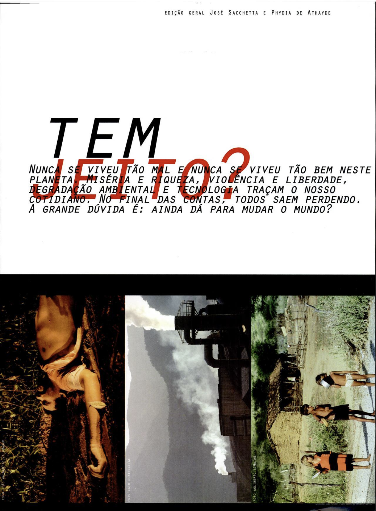
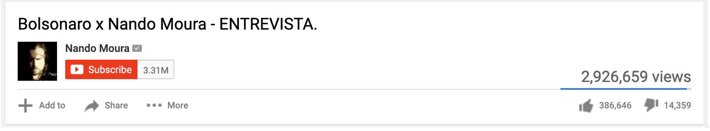

Resumo
Na última década, o Brasil viveu uma crise democrática, num contexto de ascensão da extrema-direita em todo o mundo. Esse processo se deu com o protagonismo da internet e das redes sociais, palcos de disputas ideológicas que influenciaram eleições e a história política de diversos países. O ativismo político online passa por uma guerra nos campos da visualidade e das retóricas visuais, onde se disputa a atenção dos usuários e se desafia o design das redes em busca de audiência e engajamento. Os protestos de rua de junho de 2013 são vistos por muitos como o estopim da crise democrática brasileira, num processo de retirada do governo petista de centro-esquerda, culminando numa ascensão da extrema-direita, com a eleição de Jair Bolsonaro em 2018. Esse é um recorte da história política do Brasil com influência direta da guerra de visualidade nas redes. A presente dissertação busca investigar dois fenômenos que demarcam esse período como forma de observar a transição de um sistema para o outro. Ao nos debruçarmos sobre a Mídia NINJA – coletivo de comunicação independente que surgiu no fervor dos protestos de Junho de 2013 – e sobre youtubers bolsonaristas, influenciadores digitais de extrema-direita importantes para a eleição de Jair Bolsonaro em 2018 – podemos observar a centralidade que os aspectos visuais da internet assumem numa disputa de narrativas que sai da web e ganha as ruas e as urnas. Foram realizadas análises de retórica visual, assim como análises de retórica da interação das principais redes sociais utilizadas por cada grupo. Além disso, foram realizadas contextualizações sobre a relação entre política e internet no Brasil e sobre a guerra de visualidade no contexto da internet.
Palavras-chave: Design de comunicação visual. Visualidade. Internet e Sociedade. Design de Interação
Sumário
3. A Retórica Visual da Mídia Ninja
3.1 A formação da Mídia NINJA e as Jornadas de Junho
3.3 Análise da retórica visual
Introdução
Essa dissertação se insere num campo de estudos recentes no Brasil, que em algum momento pode ser definido como: “como viemos parar aqui?” A ascensão de Jair Bolsonaro à presidência em 2018 simbolizou também a chegada da extrema-direita ao poder pelo voto popular, num Brasil que vive um estado de crise permanente desde as Jornadas de Junho em 2013 – série de protestos de rua que explodiram por todo o país naquele ano, impulsionados inicialmente pelo aumento das passagens de ônibus, mas que ao longo das semanas foi acumulando uma série de pautas sociais difusas e, por vezes, contraditórias. O que chama a atenção nesse processo foi que o país viveu 14 anos sob um governo de centro-esquerda, e vinha de duas décadas de uma suposta normalidade democrática após o fim da Ditadura Militar. Desde os grandes protestos de 2013, o país não foi mais o mesmo: em 2014, uma disputa presidencial tensa e extremamente polarizada. Em 2015, protestos de rua ainda maiores pedindo o impeachment da presidente eleita, concluído em 2016, seguido de uma guinada ultraliberal liderada pelo vice-presidente, principal conspirador do golpe e detentor, na época, da pior avaliação presidencial da história do país. Não é como se a crise houvesse acabado, mas a eleição de Bolsonaro ganhou ares de conclusão de um período, como se o objetivo da desestabilização política do país tivesse nesse fato um objetivo atingido.
“Como viemos parar aqui?” é uma pergunta que ecoa na minha cabeça pelos últimos dez anos, pois, assim como parte dos brasileiros da minha geração, estive nas ruas em 2013. O sentimento de quem estava na Avenida Rio Branco, naquela segunda feira, 17 de junho de 2013, era o de que a internet e as redes sociais nos garantiam ali um nível de participação democrática irrevogável. Àquela altura, havia uma percepção de progressismo nos atos, que foi se diluindo conforme os dias passavam e os protestos se massificavam. Na quinta-feira, dia 19 de junho, já havia uma impressão esquisita no ar, com ataques a partidos e faixas pedindo intervenção militar aparecendo nas ruas. Essa impressão foi sendo cozinhada ao longo dos anos seguintes e culminou na eleição de Bolsonaro, e transformou aquele otimismo num futuro “tecnodemocrático” num pessimismo “tecnodistópico”. E eu fui acompanhando, estarrecido, aqueles ambientes digitais que antes embalavam a nossa esperança se tornarem amplificadores da extrema-direita global. Compreender esse processo foi a minha principal motivação em transformar a dúvida “Como viemos parar aqui?” em uma pesquisa.
Muitos estudiosos, de diversos campos do conhecimento, buscam compreender esse período. Antropólogos, comunicólogos e cientistas sociais construíram um vasto panorama intelectual – que, inclusive, me foram fundamentais como referencial teórico – de compreensão dessa crise. Contudo, sempre senti que havia uma lacuna importante a ser explorada nesse panorama, que são os aspectos de comunicação visual e design que estiveram e estão implicados nos processos políticos contemporâneos, altamente conformados pela internet e a vida digital. A pesquisa que fiz para o meu trabalho de conclusão da graduação em design já se debruçava sobre o impacto que a massificação dos meios de produção de bens culturais através do computador gerava no ímpeto criativo. A transformação de usuários em consumidores e produtores de conteúdo num mesmo ambiente digital impactou as mais diversas áreas da cultura e do entretenimento, transformando o regime de visualidade. Contudo, essa afirmação me levava a uma hipótese positiva dessa transformação, que foi posta em xeque com o abalo democrático causado pela popularização da nova direita no mundo, apoiada justamente pela nova cultura digital.
A pergunta “Como viemos parar aqui?” tem na passagem do tempo um atributo central, o que traz para essa dissertação um aspecto histórico. Para tanto, optei por observar dois fenômenos que, de alguma forma, se destacaram em cada uma dessas pontas temporais. A Mídia NINJA – coletivo de comunicação independente, que se notabilizou durante as Jornadas de Junho ao cobrir os protestos em tempo real via livestreaming – foi o fato novo naquele momento. O uso subversivo, tanto de hardware como das redes sociais, trazia uma sensação de domínio dos manifestantes sobre as caixas pretas tecnológicas, e alimentavam as expectativas positivas sobre o futuro. Na outra ponta, em 2018, a popularidade de youtubers alinhados ao bolsonarismo Bolsonarismo é um termo cunhado e para se referir ao movimento de extrema-direita que se popularizou no Brasil a partir de 2016 e que se organiza em torno da figura de Jair Bolsonaro. Apesar das raízes ideológicas desse movimento partirem de outras fontes, como o escritor Olavo de Carvalho, a imagem pública e ação política de Bolsonaro e sua família aglutinaram um movimento social e político baseado em valores autoritários, supremacistas e reacionários que conquistou relevância na vida política brasileira na última década – esses influenciadores não formavam um grupo homogêneo, mas orbitavam o grupo político de Bolsonaro e divulgavam a sua ideologia –, que se elegeu mesmo com poucos recursos tradicionais das campanhas políticas, como tempo de televisão, evidenciou um uso bem-sucedido por parte da extrema-direita da dinâmica de funcionamento das redes sociais. A minha proposta é comparar as duas pontas desse processo histórico (2013-2018) através da observação desses dois fenômenos (Mídia NINJA-youtubers bolsonaristas).
A metodologia utilizada para abordar essa comparação é baseada no “dispositivo foucaultiano do antes-e-depois”, assim definido pelo ensaísta americano John Rajchman em análise sobre o trabalho de Michel Foucault (RAJCHMAN, 1988). Esse dispositivo metodológico nos permite ilustrar a passagem de um sistema para o outro. Para estabelecer um quadro comparativo, desenvolvi análises de retórica visual – a partir de metodologia proposta por Sonja Foss (1994) – e de retórica da interação – baseado em metodologia demonstrada na tese de Barbara Emanuel (2017) – dos dois fenômenos analisados, como forma de conceber uma observação dos aspectos de comunicação visual e design que envolvem esses fenômenos.
É importante ressaltar que há uma implicação pessoal no fato de que eu estava nas ruas em junho de 2013, votei em Dilma Rousseff em 2014, chamo o impeachment de golpe e fui às ruas contra o governo Temer entre 2016 e 2018. Apesar de adotar uma abordagem de observação por vezes distante, as minhas posições políticas pessoais estão implicadas a todo momento. Essa dissertação parte da premissa de que a ascensão da extrema-direita não é um fato positivo para nenhuma sociedade, de que a eleição de Jair Bolsonaro foi trágica para o Brasil. Ou seja, esse é um saber localizado, nos termos da filósofa Donna Haraway, em aspectos históricos, geográficos e políticos.
No capítulo 1, apresento uma contextualização da premissa que tensiona as percepções na sociedade sobre otimismo e pessimismo nos impactos da popularização da internet no Brasil e no mundo. Essa abordagem passa por um breve histórico das dinâmicas políticas, à esquerda e à direita, que conviveram no ambiente digital desde os seus primórdios, e sobre o impacto dessa proliferação da internet no regime de visualidade contemporâneo.
No capítulo 2, discuto os aspectos metodológicos da pesquisa, que se dá por meio de uma comparação entre dois fenômenos históricos, como forma de ilustrar a passagem de um sistema para o outro. Essa abordagem é baseada no “dispositivo foucaultiano do antes-e-depois”, assim definido pelo ensaísta americano John Rajchman em análise sobre o trabalho de Michel Foucault. Desenvolvi análises de retórica visual e de retórica da interação dos dois fenômenos analisados, como forma de conceber uma observação dos aspectos de comunicação visual e design que envolvem esses fenômenos.
Os capítulos 3 e 4 dão conta de uma contextualização e das análises retóricas de cada um dos fenômenos analisados nessa dissertação – a Mídia NINJA e youtubers bolsonaristas. Essas análises são compiladas, em cada capítulo, em quadros sinópticos que resumem os principais aspectos compreendidos nas análises.
No capítulo 5 eu apresento a conclusão do trabalho, a partir da comparação dos quadros sinópticos consolidados nos capítulos anteriores, além de discutir possíveis desdobramentos para essa pesquisa a partir dos novos acontecimentos tecnopolíticos dos anos que se seguem ao período observado nessa dissertação.
1. Contextualização
Uma premissa importante norteia essa pesquisa: a percepção de que as reflexões sobre o impacto da internet na sociedade passaram de uma predominância de otimismo para uma predominância de pessimismo. Essa percepção é uma dúvida pessoal que essa pesquisa tenta investigar: qual o conjunto de forças políticas que influenciam nas variações da opinião pública sobre a internet?

FIGURA 1: Frame de entrevista do pensador Pierre Lévy no programa Roda Viva, em 2001. Fonte: https://youtu.be/DzfKr2nUj8k Acessado em: 13 de novembro de 2022.
O uso do termo predominância se deve ao fato de que, desde o estabelecimento da internet comercial “Internet comercial” é um termo usado para se referir à popularização da rede mundial de computadores para uso individual e comercial. Distingue-se dos primeiros anos da rede, criada a princípio com intenções militares e acadêmicas. Pode-se compreender como um marco de sua criação a World Wide Web, sistema de informações proposto por Tim Berners-Lee, que se utiliza um navegador para acessar documentos variados através de hyperlinks. , no início dos anos 1990, a web vem sendo debatida a partir de uma série de perspectivas, mas, de uma forma geral, essas perspectivas eram majoritariamente positivas entre opinião pública e especialistas no tema.

FIGURA 2: Página da Revista Trip de dezembro de 2000, dedicada a discutir as novas formas de ativismo apoiadas nas novas tecnologias. Fonte: http://tinyurl.com/buwadof. Acessado em: 13 de novembro de 2022.
Contudo, com a inegável relação da internet nos últimos acontecimentos políticos que abalaram a democracia liberal ocidental, as reflexões sobre a internet tendem a ser mais pessimistas. Essa mudança pode ser percebida, por exemplo, no tratamento que as big tech Termo utilizado para designar as empresas com maior participação no mercado de tecnologia: Google, Apple, Microsoft e Meta (dona de Facebook, Instagram e Whatsapp) recebem de governos nos últimos anos, com maior regulação de suas atividades.
A inquietação que levou à investigação descrita nesse capítulo é uma tentativa de fugir de uma explicação linear de transição histórica, e uma busca por compreender as disputas ideológicas que configuram a história da web.
1.1 Otimismo e pessimismo nas reflexões sobre a internet
Podemos dizer que o pensamento sobre o impacto que a Internet teria no mundo era predominantemente positivo entre intelectuais e a opinião pública, como um novo espaço de interação com potencial democratizante (CASTELLS, 1999). Ainda que pondere sobre os perigos associados à vigilância e reorganização da força de trabalho, Negroponte (1995) afirma:
Enquanto políticos lidam com a bagagem da história, uma nova geração está emergindo do horizonte digital livre de muitos dos antigos preconceitos. Essas crianças serão livres das limitações de proximidade geográfica como base única para amizade, colaboração, diversão e vizinhança. A tecnologia digital pode ser uma força natural formando pessoas num grande mundo harmônico (NEGROPONTE, 1995, p. 230).
Esse otimismo sobre a internet se populariza depois de algumas décadas de desilusão da sociedade com a tecnologia. Se no início do século XX as vanguardas modernistas louvavam as possibilidades de transformação do mundo que a máquina possibilitava, o fim trágico da Segunda Guerra Mundial – tanto o Holocausto como as bombas atômicas, exemplos do uso da tecnologia para o mal – e o estabelecimento da Guerra Fria propagaram um desencanto com as utopias tecnocráticas do século XX. Contudo, a popularização da internet comercial e da “revolução da informação” reabilita a esperança no futuro através da máquina, o que Berardi define como “a última utopia”:
No entanto, de todas as utopias do século XX, a utopia virtual é a que produziu efeitos reais mais consistentes, para depois revelar-se uma porta de acesso à distopia definitiva, a distopia da morte do humano ou, mais que isso, a distopia da submissão do humano a uma cadeia de automatismos técnicos. (BERARDI, 2019, p. 48)
A história do nascimento da internet é marcada pela tensão entre os objetivos militares que levaram à sua criação, os ímpetos científicos das universidades que deram suporte ao seu desenvolvimento e os ativistas da contracultura que, ainda na década de 80, se mobilizaram para hackear as redes buscando relações sociais sem intermediação de instituições e discursos oficiais ou comerciais (MALINI; ANTOUN, 2013). O ano de 1984 é considerado um marco na invenção do chamado ciberespaço William Gibson é um autor americano-canadense de ficção especulativa, e criou o termo ciberespaço no seu livro Neuromancer, de 1984, para se referir a um espaço virtual que conectava computadores e usuários em uma rede mundial. , mas que se transformou no sinônimo do espaço virtual de troca informacional que se configurou a internet. É nesse momento também que o ativismo político começa a ocupar as redes, trazendo para o ambiente virtual as experiências de “guerrilha midiática” que já se praticavam em outros meios, como o rádio.
Malini e Antoun (2013) definem o midialivrismo como “[...] práticas da sociedade civil alternativas e antagonistas em relação ao modo de se fazer comunicação dos conglomerados empresariais transnacionais e nacionais de mídia” (MALINI; ANTOUN, 2013, p. 23). No ciberespaço, essas práticas se utilizam também dos próprios conceitos de arquitetura das redes, como as conexões peer-to-peer P2P ou peer-to-peer é uma arquitetura de redes de computadores onde cada computador pode funcionar tanto com cliente quanto como servidor. É a base de padrões de compartilhamento de arquivos famosos com o torrent, e uma das suas principais características é a descentralização, já que um mesmo arquivo, estando alocado nos diferentes computadores, não é baixado de um só lugar, mas sim das múltiplas fontes ao mesmo tempo.. Os autores estabelecem um paralelo entre dois modos de midialivrismo que, apesar de possuírem origem comum (as lutas antidisciplinares dos anos 60 e 70), bifurcam-se em genealogias distintas que vão originar o ciberativismo dos anos 80: o primeiro, baseado em políticas radicais de movimentos sociais, que se organizam em torno de iniciativas de imprensa alternativa (rádios comunitárias, experiências com vídeos e documentários); o segundo modo, definido por eles como ciberativismo, tem sua origem na arte radical e na chamada contracultura: sexo, drogas e rock’n’roll, ruídos sonoros, performances, videoarte e informática, tudo baseado no “faça você mesmo” e em processos colaborativos que recusam o poder e a mediação. Ou seja, apesar de suas origens institucionais ligadas às universidades e aos militares norte-americanos, a internet convive com conflitos ideológicos e ações políticas e ativistas desde os seus primeiros anos.
Curiosamente essa “utopia virtual” do mundo globalizado tem suas origens muito bem situadas num espaço geográfico muito específico. Em 1995, os teóricos da mídia ingleses Richard Barbrook e Andy Cameron publicam o ensaio The Californian Ideology, que – como o próprio nome do ensaio sugere – situa as origens da internet numa “aliança difusa entre escritores, hackers, capitalistas e artistas da Costa Oeste dos Estados Unidos” (BARBROOK; CAMERON, 1996, p. 44).
No ensaio, os autores demonstram que essa utopia – intitulada por eles de Ideologia Californiana – é uma espécie de fé otimista no potencial emancipatório das então novas tecnologias de informação e comunicação (TIC), baseada numa mistura entre a cultura boêmia de São Francisco com a indústria de alta tecnologia do Vale do Silício, combinando “o espírito livre dos hippies com a paixão empreendedora dos yuppies” (p.45). Contudo, para os autores, essa visão utópica depende essencialmente de uma cegueira para outras formas de sociabilidade, como a desigualdade e o racismo. Nesse sentido, a Democracia Jeffersoniana é central no argumento, citando Thomas Jefferson, que de uma certa forma encarnou essa contradição: ao mesmo tempo foi o responsável pelo inspirador chamado à liberdade e à democracia na Declaração Americana da Independência, o e terceiro presidente americano era também proprietário de aproximadamente 200 seres humanos escravizados. Não é à toa que a Califórnia tenha sido o berço dessa ideologia; durante os anos 60, o estado da costa oeste americana foi o cenário de uma transformação política e cultural que reverberou por todo o mundo. Os jovens radicais californianos, apoiados em duas décadas de crescimento econômico, nutriam otimismo por um futuro mais livre, menos desigual e mais ecologicamente equilibrado. Essas perspectivas influenciaram a chamada Nova Esquerda em todo o mundo, enfrentando as tradicionais hierarquias rígidas da sociedade, seja na família, nas universidades ou nos partidos políticos. Acima de tudo, era um movimento de rebelião cultural mirando numa sociedade libertária para o futuro. Se para alguns hippies o caminho era um reencontro com a natureza, para outros a evolução tecnológica inevitavelmente nos levaria à sociedade libertária do futuro. Influenciados pelas teorias de Marshall McLuhan, eles acreditavam que através das novas TIC inevitavelmente veríamos nascer a ágora eletrônica, um espaço virtual onde todos poderiam expressar as suas opiniões sem medo de censura, o que impulsionou a popularização de iniciativas de comunicação alternativa e de ativismo de mídia.
Para os autores, contudo, a Nova Direita respondeu se apropriando do determinismo tecnológico apoiado na tradicional utopia do Livre Mercado do liberalismo econômico. “O caminho do progresso tecnológico nem sempre leva à ‘ecotopia’ - ao invés disso, pode levar de volta à América dos Pais Fundadores” (p. 50). A ágora eletrônica se transforma assim no mercado eletrônico, onde cada indivíduo se torna um empreendedor de si, onde supostamente as forças governamentais perdem espaço para as relações estritamente entre indivíduos, com a sua liberdade individual garantida. A relação próxima entre os ideólogos da costa oeste e o “inimigo conservador” ficam evidentes na postura da revista Wired, referência entre os profissionais da “classe virtual” e que divulgava as ideias de políticos de extrema direita. Nesse ponto, Barbrook e Cameron fecham um ciclo, conectando a referência inicial ao ex-presidente americano Thomas Jefferson e uma fala de um editor-executivo da Wired à época: “A era da informação do século XXI será a realização dos ideais liberais do século XVIII de Thomas Jefferson: ‘a criação de uma nova civilização, fundada nas verdades eternas da Ideia Americana” (IDEM, p.53)
Ou seja, há na “utopia virtual” uma contradição na sua essência, que deriva do contexto político e cultural específico do espaço geográfico onde a internet nasceu, se estruturou e se consolidou. O chamado “libertarianismo”, enquanto corrente política de extrema direita, tem nessa contradição a sua fundação, ao imaginar uma sociedade sem instituições coletivas, baseada apenas no conflito de interesses individuais, mas que não considera as desigualdades que historicamente organizam a sociedade. Essa Nova Direita também pode ser denominada como neoconservadora ou neorreacionária, pois se baseiam também numa ideia de “falência” dos “ideais iluministas Ocidentais”. Esse trecho de um texto de Peter Thiel exemplifica bem a aplicação desses termos:
[...] Pether Thiel escreveu que o 11 de Setembro assinalou o fracasso do legado iluminista. O Ociente precisava de uma nova teoria política capaz de salvá-lo de uma nova configuração mundial exposta a um ‘terrorismo global’ que ‘operava fora de todas as regras do Ocidente liberal’. Thiel admite que o Ocidente tenha incorporado as doutrinas e os valores da democracia e da igualdade, para logo argumentar que tais doutrinas e valores o fragilizaram. (HUI, 2020, p. 49)
Thiel é um empresário e investidor estadunidense. Foi um dos primeiros investidores do Facebook, co-fundador do Paypal e da Palantir Technologies. Além disso, é um ativista político, tendo integrado a equipe de transição do governo Donald Trump e tendo financiado a campanha de vários políticos e causas de direita nos EUA, além de ser associado a dois pensadores neorreacionários: Mencius Moldburg (pseudônimo de Curtis Yarvin, cientista da computação e empreendedor de startups do Vale do Silício) e o filósofo britânico Nick Land. Moldburg é responsável pelo blog Unqualified Reservations, que inspirou Land e é uma das principais fontes do pensamento neorreacionário.
Land integrou o Cybernetic Culture Research Unit (CCRU, Centro de Pesquisa em Cultura Cibernética), que foi criado em 1993 (funcionando até 2003) na Universidade de Warwick (Inglaterra) e reuniu jovens pesquisadores que, influenciados pelo pós-estruturalismo francês (especialmente, Deleuze e Guattari) pensavam a cultura do mundo conectado pelas redes digitais. Uma passagem d’O Anti-Édipo serviu de base para a concepção do aceleracionismo, uma teoria política que previa a superação do capitalismo através da aceleração de seus processos históricos:
Mas que via revolucionária, existe uma? Retirar-se do mercado mundial [...] numa curiosa renovação da ‘solução econômica’ fascista? Ou, então, ir num sentido contrário? Quer dizer, ir ainda mais adiante no movimento do mercado, da decodificação e da desterritorialização? Porque, talvez, os fluxos não estejam ainda bastante desterritorializados, bastante decodificados, do ponto de vista de uma teoria e de uma prática dos fluxos com alto teor esquizofrênico. Não retirar-se do processo, mas ir mais adiante, acelerar o processo, como dizia Nietzsche: na verdade, nessa matéria, nós ainda não vimos nada. (DELEUZE; GUATTARI, 2010, p. 318)
O aceleracionismo acabou por se dividir em diferentes vertentes filosóficas, ora mais à esquerda, ora mais à direita. À esquerda, o trecho de Deleuze e Guattari foi interpretado como uma possibilidade de destruição do capitalismo através da aceleração do seu processo histórico de evolução, a partir de uma leitura marxista da inevitável derrocada do capitalismo enquanto sistema socioeconômico. Já no campo da extrema direita, o aceleracionismo se configurou no chamado neorreacionarismo: a perspectiva de uma sociedade tecnocrática e pós-estatal, onde a evolução tecnológica permite que a organização social se dê por meio de uma lógica algorítmica de disputa de interesses individuais, ao mesmo tempo que resgata valores supostamente ocidentais, como os valores morais do cristianismo. Thiel, Land e Moldburg são os principais expoentes dessa corrente de pensamento, e se utilizam da internet não apenas como meio de propagação das suas ideias – Moldburg e Land, além de manterem seus blogs são ativos em comunidades “alternativas” em fóruns como o Reddit e no 4chan Reddit e 4chan são fóruns da internet famosos pela permissividade com o anonimato de seus participantes e com a pouca regulação do conteúdo que circula nas redes, o que faz com que sejam terreno fértil para discursos de ódio e teorias da conspiração. – também são agentes econômicos, com investimentos em empresas e empreendimentos próprios.
Em resumo, o neorreacionarismo se configura como uma proposta ideológica de um futuro pós-estatal, onde a máquina supera as deficiências da democracia Ocidental rumo a uma tecnocracia baseada na computação. Esse pensamento está na origem do que se convencionou chamar de Nova Direita no século XXI, grande responsável pelas recentes crises democráticas no Ocidente.
À esquerda, as manifestações antiglobalização na virada do século também mobilizaram o imaginário libertário sobre a internet. Segundo Carlos Figueiredo, os alternomundistas – ativistas que buscam uma nova lógica de cooperação global em contraponto aos efeitos negativos da globalização econômica – foram capazes de usar a internet para contornar a cobertura da mídia corporativa, e fizeram assim surgir a Indymedia, que no brasil ganhou o nome de Centro de Mídia Independente (FIGUEIREDO, 2020). Essa tendência de expectativas positivas sobre os impactos da internet na sociedade do século XX também ganhou forte eco no Brasil, e 2013 pode ser considerado tanto um ápice como o início do declínio dessa perspectiva. Segundo Figueiredo, “houve grande otimismo em relação a esses novos movimentos, a ponto de Ryoki e Ortellado (2004) publicarem um livro intervenção de título ‘Estamos Vencendo’, composto de uma série de fotografias e pequenos textos sobre a atuação do movimento alternomundista no Brasil.” (p .2).
Contudo, o que vimos nos últimos anos foi a ascensão de movimentos de extrema-direita ao redor do mundo, seja como movimentos sociais, seja através de conquistas institucionais. Com a eleição de Donald Trump nos EUA, a ascensão de políticos de extrema-direita na Europa, o fim do ciclo de governos progressistas na América Latina, o processo do Brexit inglês, todos eventos que tiveram na internet o mesmo espaço de organização e mobilização que se reivindicava pelos midialivristas, o otimismo perde espaço para leituras mais críticas e pessimistas sobre o futuro da relação entre internet e sociedade. O escândalo da Cambridge Analytica Cambridge Analytica era uma empresa privada de mineração e análise de dados e que ficou famosa por participar de campanhas como a campanha presidencial de Donald Trump em 2016, nos Estados Unidos, e a campanha pelo Brexit, na Inglaterra. O modelo da empresa utilizava dados pessoais de usuários das redes sociais sem consentimento prévio para segmentar anúncios. foi especialmente sensível nesse processo, já que teve um impacto direto no resultado das eleições estadunidenses e demonstrou todos os riscos do imenso acúmulo e tratamento de dados pelas big tech. A partir daí, essas empresas passaram a sofrer escrutínio público e jurídico nos Estados Unidos, questionando suas práticas econômicas, e mais vozes dissonantes ao otimismo tecnocrático passaram a ganhar força na opinião pública. Esse desgaste na imagem das big tech produziu efeitos na opinião pública, fazendo com que o sentimento de pessimismo se espalhasse tanto entre usuários politicamente engajados com essas ideologias citadas como entre usuários comuns, que passam a discutir a relevância do papel das redes sociais no seu cotidiano. O Brasil foi pioneiro ao publicar o Marco Civil da Internet O Marco Civil da Internet (lei número 12.965, de 2014) é uma lei brasileira que regulamenta e estabelece certos parâmetros em relação à internet e como ela é oferecida em território nacional. , enquanto a Europa também produziu políticas públicas que exigiam maior regulação sobre as atividades das big tech. Em seu livro Dez argumentos para você deletar agora suas redes sociais o sociólogo e cientista da computação Jaron Lanier descreve as redes sociais como uma máquina de mudança de comportamento permanente, através do mecanismo de monitoração constante dos usuários para fins publicitários.
Originalmente, muitos de nós que trabalhamos pela difusão massiva da internet esperávamos que o que juntaria as pessoas [...] seria a própria internet. Mas na época havia um espírito libertário que nos levou a deixar de lado muitas funções essenciais. Achamos que seria mais sábio permitir aos empreendedores preencher as lacunas do que deixar essa tarefa para o governo. [...] Cometemos a estupidez de preparar o terreno para os monopólios globais. (LANIER, 2018, p. 26)
Em suma, podemos resumir que, à época da popularização da internet comercial, havia um sentimento dominante de otimismo com seus efeitos na sociedade, muito em parte pela romantização de um futuro tecnocrático que impregnava os principais agentes dessa popularização. Contudo, com a crise democrática que se espalhou pelo Ocidente, apoiada nessa mesma internet comercial, a predominância do otimismo passou a ser contrabalanceada por uma perspectiva mais crítica, que leva a uma discussão sobre regulação e limites das empresas de tecnologia que dominam o ambiente digital e se configuraram como monopólios globais e máquinas de vigilância.
1.2 Internet e política no Brasil
O Brasil também conviveu com mudanças políticas impactadas direta ou indiretamente pela internet. Os autores Richard Miskolci e Jorge Machado, em artigo onde traçam uma linha do tempo da relação entre internet e política no Brasil, descrevem algumas abordagens sobre as transformações proporcionadas pela internet que desenham a relação da web com a política:
As transformações proporcionadas pela internet já foram avaliadas sob perspectivas distintas, como “capitalismo cognitivo” (Boutang, 2005; Hardt & Negri, 2004); “economia da atenção” (Goldhaber, 1997; Davenport & Beck, 2001), que visa manter o usuário conectado o maior tempo possível, tanto para coletar dados como para vender anúncios; “capitalismo da vigilância” (Foster & McChesney, 2014; Zuboff, 2015), no qual o comportamento do usuário na rede, assim como dados ambientais coletados pelos sensores dos smartphones e geolocalização, alimenta os big data vendidos a terceiros com propósitos diversos – incluído o de manipulação política; outros chamam a atenção sobre processos emocionais-cognitivos que o uso da rede tem causado nos sujeitos – segundo Sherry Turkle (2011) ela nos conecta na mesma proporção em que nos afasta, criando uma nova forma de solidão. O “efeito bolha” das redes sociais (Pariser, 2011), em que as visões de mundo acabam sendo reforçadas entre grupos específicos, também tem sido foco de preocupação pelo fato de formar consensos polarizados. Mais recentemente, análises chamam a atenção para a coleta massiva de dados comportamentais, a aplicação de aprendizado de máquina, inteligência artificial e ciência de dados para aprimoramento algorítmico contínuo com fins de perfilamento e predição comportamental dos usuários (Zuboff, 2016; Rouvroy & Berns, 2015). (MACHADO; MISKOLCI, 2019, p. 246)
A concentração econômica da internet em poucas grandes empresas, baseadas num modelo agressivo de coleta de dados dos usuários, ao mesmo tempo que contrastam com os ideais libertários que mobiliza ativistas, condiciona tanto os interesses políticos das empresas que ocupam a web como a ação política dos usuários nesses espaços. Machado e Miskolci apontam o Movimento Zapatista e o surgimento da Indymedia no contexto dos movimentos de Seattle como precursores de um movimento de esquerda que ganhara a web. Contudo, os autores apontam que grupos de direita se mobilizam para confrontar essas ações de esquerda, e em 2002 Olavo de Carvalho cria o site Mídia Sem Máscara, contrapondo as ações de mídia independente encampadas pela esquerda (MACHADO; MISKOLCI, 2019). Esses mesmos elementos são precursores e, mesmo que de maneira difusa, prepararam o terreno para o evento central que marcaria a política brasileira no século XXI: as Jornadas de Junho.
As Jornadas de Junho de 2013 até hoje ecoam no imaginário brasileiro como um evento carente de uma definição clara. Como foi um acontecimento complexo, que mobilizou uma série de afetos e agentes diferentes, a sua leitura segue em disputa até hoje. Seja como nascedouro do neofascismo bolsonarista, seja como revolta popular legítima, as Jornadas de Junho se inserem tanto na história dos movimentos populares e de rua do Brasil como num quadro contemporâneo de protestos alimentados e retroalimentados pelas redes sociais.
Apesar disso tudo, podemos entender como dois precedentes claros que nos levaram às ruas naquele mês de junho: o contexto dos grandes eventos, que mobilizaram tanto esquerda como direita na crítica aos gastos públicos relacionados à Copa e às Olimpíadas, assim como os processos econômicos que reordenavam o espaço público (remoções de casas, a disputa pelo Museu do Índio) e o próprio ordenamento jurídico (lei antiterrorismo); e as mobilizações contra o aumento das passagens de ônibus liderados pelo Movimento Passe Livre (MPL). Esse encontro de contextos foi fundamental para acender a chama da revolta popular em 2013. O MPL já vinha articulando protestos de rua ao longo dos últimos anos, com capacidade de organização e alguma pulverização nacional. Apesar de pouco volumosas, as manifestações eram organizadas e consistentes. A aproximação com a Copa das Confederações, evento teste que precede a Copa do Mundo, fez com que a tensão nas ruas aumentasse muito. A mistura da percepção de corrupção e excesso de gastos com os grandes eventos, somada à indignação por conta do aumento das passagens de ônibus nas principais capitais do país (que acaba servindo como um índice do aumento do custo de vida em geral), num contexto em que as polícias militares ampliaram a sua capacidade bélica se preparando justamente para o estado de segurança exigido pela Fifa fez com que as coisas saíssem do controle, que a repressão policial fosse brutal e flagrante, e que a disputa desses grupos políticos como o MPL, organizados e politicamente posicionados, se misturasse à crítica difusa, menos organizada e ideologizada contra os grandes eventos. A internet foi o eixo, como espaço e como alavanca, para que esses fenômenos se encontrassem nas ruas do Brasil naquele ano. Para o cientista político André Singer (SINGER, 2013, p. 24), as Jornadas de Junho podem ser compreendidas em três fases: a primeira etapa foi protagonizada pelo MPL em São Paulo, que convocava os atos pela internet e levava os manifestantes para as ruas reivindicando a redução das passagens do transporte público. A estratégia era fechar grandes vias públicas, o que gerava conflitos com a polícia militar. O aumento da adesão popular, somado ao aumento sem precedentes da violência praticada pelas forças de segurança nas ruas de São Paulo levaram à segunda onda. Nessa segunda fase, as manifestações ganham a simpatia do grande público, nacionalizando os protestos, agregando outras frações da sociedade, mas também fragmentando as demandas. Esse é o momento chave das Jornadas de Junho, onde a esquerda organizada (através do MPL) perde o protagonismo das manifestações para uma difusão de agendas que abrange todo o espectro político, da esquerda à extrema-direita. Em muitas cidades, era possível ver grupos e símbolos neonazistas, faixas pedindo intervenção militar, e talvez o mais popular grito da antipolítica, o “sem partido”. A terceira fase a que André Singer se refere é uma espécie de desorganização da multidão, onde algumas pautas específicas continuam em jogo (redução de pedágios, derrubada da PEC 37, etc), além de manifestações contra a Copa das Confederações que acontecia no mesmo momento no país.
O que se viu após as Jornadas de Junho no Brasil foi uma organização sem precedentes de uma nova direita brasileira. Apesar de o estopim tenha sido a tomada às ruas em Junho, esses grupos já vinham se organizando à tempos na internet:
As novas direitas começaram a se organizar sem maiores recursos bem antes da reeleição de Dilma, entre o final do primeiro governo Lula e o início do segundo. Nessa época passaram a surgir na internet fóruns de discussão, blogs, sites, e comunidades, principalmente na falecida rede social Orkut, e posteriormente no Facebook, em que se discutiam temas relacionais ao livre-mercado, à defesa de valores cristãos, e às conjunturas políticas nacional e internacional. (ROCHA, 2018, p. 2)
Olavo de Carvalho, já citado anteriormente, foi pioneiro na utilização da internet como meio de agitação e formação política, através de blogs e podcasts, e ajudou a aglutinar entusiastas do liberalismo econômico e conservadores morais numa ideologia que mobilizou militantes na criação de institutos, think tanks e até mesmo na tentativa de formação de um partido político. Como demonstra a pesquisa de Camila Rocha, apesar das relações com instituições estrangeiras, empresários e acesso a recursos econômicos, a formação dessa direita se deu através do empenho e entusiasmo de diversos militantes (ROCHA, 2018). Esse processo foi a origem de grupos com o Movimento Brasil Livre (MBL) e o Revoltados Online, que marcaram presença nas Jornadas de Junho e lideraram as manifestações de rua contra o governo Dilma Rousseff dos anos seguintes.
Podemos assim compreender as Jornadas de Junho como uma espécie de marco ideológico, onde uma série de signos do ativismo político que no Brasil estavam tradicionalmente relacionados à esquerda (militância, movimento, protestos e manifestações de rua) passam a ser instrumentalizados por uma direita que não aceitou bem a reeleição da presidente de centro-esquerda por uma margem apertada. Dias após a confirmação da reeleição de Dilma, em 2014, os grupos de direita começaram mobilizações online para protestos de rua conta o segundo mandato da presidente (ROCHA, 2018). Essa mobilização culminou numa sequência de eventos políticos que podem ser lidos como “vitoriosos” da nova direita brasileira: a operação Lava Jato (iniciada em 2014), o impeachment de Dilma (2016) e a eleição de Jair Bolsonaro em 2018; todos eles costurados e mobilizados numa relação direta com a internet e as redes sociais.
1.3 Guerra cultural e visualidade
A ascensão da nova direita trouxe a reboque uma disputa na visualidade contemporânea. Parte importante da ideologia dessa nova direita é a existência ou necessidade de uma guerra cultural: no Brasil, o ideólogo Olavo de Carvalho popularizou o termo “marxismo cultural”, que seria uma estratégia coordenada da esquerda de ocupação dos espaços de produção cultural e intelectual – universidades, artes, imprensa – como forma de “reformar o ‘senso comum’ da humanidade”, além de reduzir a população ocidental “à condição de paciente de hospício e submetida a uma ‘psicoterapia coletiva” (CARVALHO, 2002). Argumento semelhante é utilizado por Land e Moldburg, que chamam de “Catedral” uma articulação entre o Estado e o complexo midiático-acadêmico para enfraquecer os valores Ocidentais em prol de uma compreensão ideológica da democracia baseada no multiculturalismo e no “politicamente correto” (LAND, 2013).
Um dos principais campos de disputa da guerra cultural para a extrema-direita se dá no campo dos símbolos nacionais. Em vários países onde há a ascensão de políticos populistas de direita nos últimos anos, há também uma apropriação de símbolos nacionais, o que faz a disputa política operar numa lógica onde apenas os militantes de direita são “verdadeiros patriotas”. No Brasil tanto a bandeira nacional como a camisa da seleção de futebol foram capturadas e se tornaram um símbolo de apoio à direita e a Jair Bolsonaro. Esse movimento pode ser visto desde as Jornadas de Junho, onde bandeiras de partidos políticos foram hostilizadas, passa pelas manifestações contra Dilma e pelo impeachment, e culminam em toda a retórica visual da campanha e do governo do presidente Jair Bolsonaro.
Porém, esse foi apenas um dos elementos estéticos que compuseram a retórica visual da nova direita no Brasil, que, articulada com movimentos internacionais, disputou também a visualidade contemporânea da web, baseada em memes e subgêneros culturais. Como veremos a seguir, a estética da esquerda possuía origens específicas, o que determinou diferentes abordagens visuais.
1.3.1 A estética da esquerda na internet
Após o estabelecimento da internet comercial, no início dos anos 90, o primeiro grande momento do midialivrismo ciberativista foi a chamada Batalha de Seattle, “quando milhares de militantes se instalaram na cidade para bloquear (e conseguiram!) a rodada de negociação econômica da Organização Mundial do Comércio” (MALINI; ANTOUN, 2013, p. 25). Uma característica marcante de Seattle foi a articulação entre os movimentos ciberativistas e centros de mídia independentes, virtualmente organizados, e a ocupação física através de acampamentos e ações diretas baseadas em táticas de não violência – contrastando com a esquerda radical que, até meados dos anos 70, se baseava no uso da violência como prática política. A publicação de inauguração do site seattle.indymedia.org ilustra a importância da articulação dos movimentos sociais e a internet:
“A web altera dramaticamente o equilíbrio entre a mídia ativista e a mídia multinacional. Com apenas um pouco de código e algum equipamento barato, nós podemos configurar um website automatizado que rivaliza com as corporações. Prepare-se para ser inundado pela maré dos ativistas de mídia nas ruas de Seattle e ao redor do mundo, contando a verdadeira história por trás do Acordo Comercial Mundial.” (ARNISON, 1999)
A experiência de Seattle reverberou no mundo todo, e no Brasil, teve no Centro de Mídia Independente (CMI) ou seu principal fruto. O sucesso dessas práticas – que também podem ser chamadas de “alternomundismo” – renovou a atuação da esquerda no início do século XXI e alimentou pensadores marxistas, como Negri e Hardt, que cunharam os termos Multidão e Império para se referir a uma nova organização da luta de classes. Essa perspectiva ganhou novo fôlego com a Primavera Árabe e o movimento Occupy Wall Street, que tiveram a sua configuração determinada pelo auge da chamada web 2.0.
Essa dinâmica entre ruas e redes também mobilizou a estética dessas manifestações. Vídeo, cartaz e rádio se somam ao meme, à projeção de imagens e ao livestreaming. O aspecto artístico do ciberativismo se desdobra, e, em todos os exemplos das chamadas revoluções P2P (BENTES, 2015, p. 21) encontramos ações de comunicação visual baseadas em tecnologias e abordagens emergentes. Nascido no Occupy Wall Street, um dos exemplos mais consolidados desse tipo de mobilização é o The Illuminator, movimento que surgiu nos acampamentos em 2011 e encara o próprio trabalho como “uma ferramenta de comunicação, uma espécie de megafone visual” (READ, 2017, p. 286). O principal dispositivo do coletivo é uma van equipada com um projetor de vídeo, que projeta imagens e textos em prédios urbanos como forma de disputa da “guerrilha semiótica”. Mark Read, um dos idealizadores do movimento, argumenta que se manifestar através da imagem e dos símbolos é uma forma de disputar “O Espetáculo”, que seria um conjunto de símbolos que constroem uma realidade social apresentada como natural e inevitável. Read afirma que essa é uma estratégia de manutenção do status quo, e que capitalistas e fascistas se destacam nesse contexto por tradicionalmente dominarem o campo da propaganda. Apesar de se estruturar nas intervenções imagéticas no espaço público, o The Illuminator também se articulou divulgando suas ações nas redes (mantendo páginas no Facebook, no Twitter e no Instagram) e desenvolvendo outros produtos de disputa da “guerrilha semiótica”.
FIGURA 3: Projeção do The Illuminator na fachada de um dos hotéis do então presidente americano Donald Trump. Fonte: Site do The Illuminator. Fonte: http://theilluminator.org/actions/ Acessado em: 15/05/2022
O conceito de “espetáculo” utilizado por Read reverbera o clássico A sociedade do Espetáculo, de Guy Debord, e resgata o seu pensamento para o contexto pós-internet. Barbara Szaniecki, no livro A Estética da Multidão (2007), traça uma trajetória da imagem política, desde a representação do rei Luís XIV, passando pelo maio de 68 francês, chegando até os cartazes e imagens críticas ao imperialismo e capitalismo norte-americanos. Esse panorama, também emoldurado pela percepção de Debord de que a separação entre homem e do seu trabalho constrói uma realidade imaterial Szaniecki explica que, para Debord, o espetáculo é a transposição do material para o imaterial. O espetáculo então se estabelece a partir de uma construção estética do capital, especialmente a partir das imagens da publicidade, e se constitui como uma camada de realidade que se sobrepõe ao mundo material. A leitura que Mark Read faz do concito de Guy Debord segue por esse caminho, e funciona como uma justificativa para que o ativismo radical de esquerda dispute essa “guerra semiótica”, no sentido de disputar a camada da estética imposta pelo ele chama de “O Espetáculo”, como que transformando o conceito numa espécie de sujeito. , reforça a ideia de uma “guerrilha semiótica” e da importância da disputa da imagem – e dos meios de sua circulação – para a luta política.
Contudo, toda essa dinâmica era dependente do design da web na época, tanto em termos de software como de hardware. O espaço de tempo entre A Batalha de Seattle e a Primavera Árabe é o período em que a chamada web 2.0 se consolida, com o conteúdo produzido pelos usuários sendo protagonista, mas com as redes sociais funcionando como plataformas fechadas (O’REILLY, 2005), contrariando os preceitos de liberdade e descentralidade da rede. No Brasil, Facebook, Twitter e Youtube foram centrais para as dinâmicas das Jornadas de Junho, tanto para mobilização dos manifestantes como para a construção e desconstrução das narrativas sobre os protestos entre a opinião pública. Outras redes como o Flickr e o Twitcasting, também foram muito importantes, mas a dinâmica comercial da web fez com que alguns desses ambientes deixassem de existir ou de ter uma participação popular relevante, perdendo espaço para outras redes ou apps.
1.3.2 Estética e a nova direita
Essa guerra cultural produz efeitos diretos ou indiretos, propositais ou acidentais, no regime de visualidade contemporâneo. Todas as formas de representação visual praticadas no mundo digital estão sob disputa ideológica, mesmo aquelas que nasceram sem pretensões políticas claras.
Em 2014, o filósofo Luis Felipe Pondé publicou em sua coluna no jornal Folha de São Paulo um texto intitulado: Por uma direita festiva. No texto, Pondé afirma que “Ser jovem e liberal é péssimo para pegar mulher. Este é o desafio maior para jovens que não são de esquerda” (PONDÉ, 2014). Segundo o filósofo, jovens de direita seriam mais “caretas”, ao passo que jovens de esquerda possuem o domínio sobre elementos da cultura popular, como música, cinema e festividades em geral, o que os faria mais atraentes. Para o autor, a direita deveria buscar a sua face “festiva” para se tornar mais popular. Esse texto é um bom resumo de como, de fato, a direita passou a se comportar na internet para disputar o imaginário de uma juventude cada vez mais conectada, que mantém a sua relação com a cultura popular cada vez mais mediada pelo ambiente virtual.
Um dos grandes exemplos dessa disputa da visualidade é o meme Pepe the Frog. O desenho foi criado em 2005 sem nenhuma associação ao nazismo ou ao ex-presidente estadunidense Donald Trump, mas, 10 anos depois, o desenho viralizou como meme – a princípio no 4chan – e logo depois ganhou o mundo republicado por normies “Normie” é o termo utilizado pelos frequentadores de comunidades radicais do 4chan para designar pessoas comuns, participantes da sociedade que não tem visões políticas abomináveis ou hobbies desagradáveis. Basicamente, são pessoas que não frequentam esses fóruns e não comungam das ideias racistas, misóginas e supremacistas veiculadas nesses fóruns. nos mais variados contextos. A partir daí, um fórum do 4chan articulou uma reconfiguração do meme num ícone supremacista, ao associar o caricato anfíbio a símbolos nazistas e supremacistas (NUZZI, 2016). O comportamento desses fóruns sempre foi anti-sistêmico, e é difícil discernir até que ponto a defesa e propagação de discursos de ódio é somente uma forma de protesto despolitizado, mas o fato é que a estratégia se funde ao modus operandi praticado pelos líderes de extrema direita que chegaram ao poder na última década.
FIGURA 4: Meme do “Pepe the Frog” alusivo ao ex-presidente estadunidense Donald Trump. Fonte: https://www.thedailybeast.com/how-pepe-the-frog-became-a-nazi-trump-supporter-and-alt-right-symbol. Acessado em: 28/05/2022
Um outro exemplo da guerra cultural é a apropriação fascista do vaporwave. O vaporwave é um microgênero musical nascido na internet que também é caracterizado por uma estética visual marcante. Tanto em termos sonoros como imagéticos, o vaporwave se compõe de uma série de referências à cultura digital dos anos 80 e 90.
Se você pesquisar “estética vaporwave” no Google irá encontrar uma miríade de variações sobre o mesmo tema, descrita de modo certeiro por um comentarista enquanto “uma obsessão com as subculturas dos anos 80 e 90; usando a art glitch, design gráfico em seu início, bustos romanos, e uma fascinação com as paisagens tropicais e a cultura japonesa”. Outros temas frequentes são as luzes de neon, computadores antigos, arranha-céus, palmeiras de baixa reolução e o oceano. Artistas tem seus nomes como “VECTOR GRAPHICS” ou “PrismCorp Virtual Enterprises”; suas músicas se chamam “Palm Tress, Wi-fi e Dream Sushi” ou “ECCO と悪寒ダイビング.” Harper descreve esse efeito no geral: “como um resultado deste paratexto, cada produção vaporwave, normalmente mais que um arquivo zip ou um download gratuito do Bandcamp ou Soundcloud, é apresentado como se fosse uma otimista e quase propagandística ajuda a vida tecnológica.” (LEMMENS, 2017)
Essa subcultura digital foi subvertida pela extrema-direita num outro microgênero chamado fashwave. O termo apareceu pela primeira vez em 2016 num texto de Andrew Anglin, no portal de direita chamado Daily Stormer. Nele, Anglin buscava por uma estética para sua ideologia, “um Wagner para a extrema-direita do século XXI”. Em termos estéticos, o fashwave se utilizava dos neons e das referências clássicas do vaporwave, mas estabelecendo relações supremacistas a elas. Frases de efeito como “Defend the West” e “Long Live Europe” são associadas a imagens de esculturas clássicas como uma forma de reforçar o apreço a uma suposta “cultura branca europeia”.
FIGURA 5: Estética vaporwave. Fonte: https://traduagindo.com/2019/08/05/colocando-o-neon-em-neo-nazi-a-apropriacao-do-vaporwave-pela-extrema-direita/. Acessado em 28/04/2022.
Assim como o Pepe the Frog, o vaporwave furou a bolha da subcultura e atingiu a cultura de massas, tendo decorado uma performance da cantora Rihanna no programa de televisão estadunidense Saturday Night Live. Contudo, o seu processo de subversão reacionária também ganhou o mundo, e serviu de “estética tardia” para o governo Bolsonaro (DECLERQ, 2019).
FIGURA 6: Estética vaporwave e bolsonarismo. Fonte: https://sensoincomum.org/2019/08/30/por-que-o-vaporwave-irrita-tanto-a-esquerda/. Acessado em 17/09/2022.
Essa noção de guerra cultural aplicada pela Nova Direita no mundo digital, baseada numa crítica ao status quo, vai ao encontro ao conceito de “eu-pistemologia”, apresentado a seguir, além de reverberar na atuação de influenciadores digitais de direita no Brasil, especialmente após as eleições majoritárias de 2014.
1.3.3 A “eu-pistemologia” da imagem
A pesquisadora de estudos de mídia Liesbet Van Zoonen publicou, em 2012, o artigo: I-pisteomolgy: Changing truth claims in popular and political culture. No trabalho, a autora propõe o conceito de “eu-pistemologia”: uma nova epistemologia baseada no indivíduo a partir da crise de credibilidade das tradicionais instituições de conhecimento (universidade, mídia, etc.) somada à ascensão das redes sociais (VAN ZOONEN, 2012). Apesar de uma aparente estabilidade nas estatísticas de avaliação de confiabilidade dessas instituições, muitos países enfrentaram escândalos de mídia e casos de disseminação de desinformação, como a popularização de terapias alternativas e movimentos anti-vacinação. Para a autora, “Essas complexas articulações entre confiança geral e desconfiança específica, precisam ser observadas num contexto mais amplo de desenvolvimento sociocultural, especificamente àqueles relacionados à ‘modernidade’, ‘sociedade de risco’ e ‘cultura do medo’”. (p.4)
Ou seja, num ambiente de insegurança epistemológica, as pessoas tendem a procurar alguém para culpar, e se tornam elas mesmas alternativas de acesso e difusão de conhecimento; “Onde a epistemologia é interessada na natureza, nas fontes e nos métodos de conhecimento, a ‘eu-pistemologia’ responde essas questões à base do eu e da identidade, com a internet como grande facilitadora”. (IDEM, p.5)
A partir desse ponto, a autora desenvolve a questão do eu a partir de uma perspectiva de mídia; o ponto de vista pessoal tem ocupado uma posição privilegiada na cultura política e popular. Vivemos ambientes tão capturados por imagens, produtos e experiências plastificadas/artificiais, que a autenticidade e a ideia de uma personalidade mais humana passam a se tornar um desejo de consumo. Segundo a autora, “(...) quando tem de escolher entre conhecimento mediado ou pessoal, o público em geral dá mais peso a suas próprias experiências, ou àquelas que parecem mais próximas do que as que são apresentadas a eles pela mídia”. (IDEM, p.6)
A “eu-pistemologia” de Van Zoonen vai de encontro à discussão sobre imagem polida e imagem poluída, proposta por Marcos Martins. Dentro de todo esse novo contexto de produção e distribuição de imagens, e da participação cada vez maior de não profissionais na confecção dessas imagens, Martins argumenta:
“[...] que dessa massa aparentemente caótica, é possível notar a presença recorrente de duas frequências que fornecem um cenário possível de análise: de um lado imagens altamente manipuladas e retocadas, as quais serão aqui denominadas imagens polidas. De outro lado, aparentemente oposto, imagens toscas, de baixa resolução, em geral de proveniência amadorística, as quais nomeamos imagens poluídas. [...] Entretanto, reduzindo drasticamente a polissemia desse par, proponho que tanto a familiaridade que cada imagem individualmente nos inspira quanto a estranheza que sua combinação provoca, são tributáveis a uma pedagogia midiática que nos permite, hoje, associá-las respectivamente aos valores de artifício e evidência” (MARTINS, 2012, p. 287)
Essa dicotomia entre imagem polida/artifício e imagem poluída/evidência está intrinsecamente relacionada com a epistemologia do eu e nas formas de se gerar credibilidade e autenticidade (evidência) na comunicação contemporânea. Se essa dicotomia se deu, a princípio, pela popularização de meios de produção de imagem de baixo custo e qualidade, hoje a estética dessas imagens já é instrumentalizada para atingir os objetivos de artifício e evidência; “Não se trata daquilo que o pixel possa explicar, mas aquilo que ele possibilita ver”. (IDEM, p.268).
A imagem poluída é a protagonista da epistemologia do indivíduo na propagação de conhecimento não-oficial; seja a imagem estática, como os memes, ou a imagem em movimento, como vídeos de celular, stories de instagram, lives e vlogs; a imagem poluída, com o seu atributo de evidência, é o principal meio para a circulação da “eu-pistemologia”. Mas também se torna um apelo comercial, para aproximar o discurso ao público consumidor: a lógica do viral se dissemina pelas campanhas publicitárias, rearticulando uma série de pressupostos de qualidade da imagem feita para vender. Entretanto, a imagem polida também está presente no jogo da epistemologia do eu. A contraposição entre “mídia hegemônica” e “mídia alternativa” se dá, muitas vezes, num jogo de simulacros de formato, com os indivíduos produtores de conteúdo assumindo alguns dos elementos estéticos tradicionalmente utilizados pelas instituições oficiais de conhecimento.
FIGURA 7: Canal “Terça Livre” do Youtube. Fonte: https://www.jornalrondoniavip.com.br/noticia/geral/por-espalhar-mentiras-e-odio-youtube-exclui-canal-terca-livre-do-bolsonarista-allan-dos-santos/brasil. Acessado em: 28/05/2022
Aqui, a imagem polida não é exatamente a imagem do retoque, mas a imagem da “forma oficializada”, que passa a ser subvertida e apropriada pelos “alternativos”. Além disso, a imagem polida como retoque ganha novos contornos com a emergência da inteligência artificial, que elimina cada vez mais o “gesto artístico" na produção dessa imagem retocada, potencializando o atributo do artifício tanto no sentido da “sensualidade, psicodelia e suavidade” desse atributo (IDEM, 268) — que hoje pode ser sintetizada pelos filtros das redes sociais, que tanto funcionam como ferramentas “cosméticas”, que corrigem e transformam nossos rostos nas selfies, além de reconfigurações visuais através de manipulações mais agressivas e com apelo artístico —, inclusive no sentido da transformação do "estatuto do real” da imagem como ferramenta de desinformação, por meio de técnicas como o deep fake.
FIGURA 8: Filtros do Instagram para Selflies. Fonte: https://www.idownloadblog.com/2017/05/16/instagram-selfie-filters/. Acessado em: 28/05/2022
Contudo, como aponta o autor, “as retóricas visuais do artifício e da evidência operam de modo complementar (...) o bom funcionamento de parte da engrenagem midiática, hoje, necessita de que artifício e evidência estejam em constante alternância e entrecruzamento”. (IDEM, p.275). Esse jogo de imagens é o elemento central na comunicação visual da “eu-pistemologia”.
De volta ao trabalho de Van Zoonen, a autora aponta que esse movimento de valorização da experiência pessoal como fonte privilegiada de conhecimento, tem parte e parcela no populismo da nova direita que emergia na Europa àquela altura (VAN ZOONEN, 2012, p. 7). O apelo aos conflitos pessoais e individuais, as preferências pelo personalismo e individualismo, e o destaque para os dramas das “pessoas comuns” são o combustível para a disseminação desse populismo. Podemos então perceber que a direita neorreacionária mobiliza a sua guerra cultural nesse contexto epistemológico apresentado por Van Zoonen; o marxismo cultural de Olavo de Carvalho, ou a Catedral de Land e Moldburg, são reflexos (ou agentes?) dessa crise de credibilidade, enquanto os channers e os influenciadores de extrema-direita são os artífices da dominação do ambiente digital por uma visualidade neorreacionária.
A radicalidade da individualidade é o elemento central do regime neoliberal, que não se configura apenas como uma reorganização econômica, mas também da ordem psicológica (KALIL et al., 2021, p. 2–3). A eu-pistemologia da imagem pode ser percebida nos mais diversos meios de comunicação visual: filmes, séries, vídeos no youtube, memes e fotos. Talvez a selflie seja o maior símbolo dessa reorganização da visualidade, mas, no contexto da imagem em movimento, os vlogs Derivado do blog, o termo vlog se refere aos vídeos com relatos do dia-a-dia ou opiniões sobre assuntos populares no cotidiano que se popularizaram na internet, principalmente no Youtube, na década de 2010. cumpriram esse papel na segunda década do século XXI. E, no Brasil, os primeiros vloggers a se destacarem no ambiente político foram influenciadores de direita. Muitos deles se politizaram após as Jornadas de Junho, que, se não foram o início da guerra cultural da direita no Brasil, foram o seu grande ponto de inflexão – e parte dessa virada se deu através da disputa estética.
2. Metodologia
2.1 Design e Arqueologia das Mídias
Essa pesquisa aborda dois acontecimentos específicos da história do Brasil: a atuação da Mídia NINJA em seu período inicial (entre 2013 e 2014) e os principais youtubers bolsonaristas em 2018. Apesar da distância temporal entre os objetos estudados, o trabalho não trata de uma análise de passagem do tempo, mas sim da escavação de um retrato tecnológico\comunicacional de dois contextos históricos que, postos lado a lado, ilustram a transição de um momento para o outro. Essa abordagem vai ao encontro de um dispositivo frequente na escrita de Michel Foucault, que foi chamado pelo pesquisador americano John Rajchman de “imagens de antes-e-depois”. Rajchman publicou um ensaio chamado “A Arte de ver em Foucault”, na revista americana The Observer, em 1988, onde demonstra a importância da visão (e de suas tecnologias) para o pensamento de Foucault (RAJCHMAN, 1988).
Em seu ensaio, Rajchman define Foucault como um "historiador extremamente visual" (IDEM, p. 90). A questão visual aqui é tanto direta – como no capítulo de abertura do livro "As Palavras e as Coisas", onde Foucault disseca o quadro "Las Meninas", do pintor espanhol Diego Velásquez – quanto na forma de se abordar fatos, documentos, objetos ou contextos sociais. Em "Vigiar e Punir", Foucault primeiro descreve a execução por esquartejamento do regicida Damiens, na França do século XVI, e depois, o regulamento da "Casa dos jovens detentos em Paris", publicado trinta anos depois. Nesse último exemplo, ao apresentar dois fenômenos em contextos históricos diferentes, Foucault demonstra a transição de um sistema para o outro – no caso, o abandono das práticas de flagelo público como punição para crimes, em favor do confinamento de vigilância disciplinar das prisões. Esses dois fatos documentados se tornam então “monumentos” (IDEM, p.90) que, pela simples disposição lado a lado, tornam visíveis uma mudança da sociedade ao longo do tempo.
FIGURA 9: Imagens que exemplificam os modelos de punição que mudaram em 30 anos na França, analisados por Foucault em seu livro “Vigiar e Punir”. Fonte: O autor.
O mesmo método pode ser aplicado para os objetos dessa pesquisa (Mídia NINJA / youtubers bolsonaristas). Apesar da curta distância de tempo entre 2013 e 2018, ambos os fenômenos foram condicionados pelas possibilidades tecnológicas disponíveis, assim como as suas premissas ideológicas determinaram a maneira como cada fenômeno se fez visível. Ou seja, os fenômenos se tornam visíveis diretamente por seus aspectos de hardware (rede de internet, câmeras, celulares, computadores) e software (redes sociais) assim como pelas dinâmicas retóricas que consolidaram a sua visualidade. Para cada objeto há uma bagagem ideológica de representação visual que, em associação aos aspectos tecnológicos, configura a visualidade que conforma cada fenômeno. Ou seja, existe uma relação dialética entre a retórica visual dos conteúdos produzidos pelos fenômenos estudados na pesquisa e a arquitetura das redes pelos quais esses fenômenos circularam, e a observação dessa relação pode trazer à luz questões importantes na transformação política dos últimos anos.
Dessa maneira, a estratégia metodológica da pesquisa passa por uma dissecação arqueológica da retórica visual dos conteúdos produzidos pelos fenômenos pesquisados (mídia NINJA / youtubers bolsonaristas) e de uma análise da retórica da interação das redes pelas quais esses conteúdos são distribuídos. Essa atitude é uma forma de aproximação de uma pesquisa em design do campo de pesquisas chamado de Arqueologia das Mídias que, segundo Jussi Parikka surge, dentre outras fontes, do estudo de arqueologias do poder e do saber de Foucault. Para Parikka:
"[...] a arqueologia significa escavar as razões de fundo pelas quais um objeto, uma declaração, um discurso ou, no nosso caso, um dispositivo de mídia, ou uma rotina de uso é capaz de se originar, ser adotada e se sustentar em uma situação cultural" (PARIKKA, 2021, p. 28).
As "razões de fundo" aqui podem ser tanto aspectos de contexto histórico-social, mas também aspectos técnicos e formais de cada objeto investigado. As questões de design relativas a qualquer produto cultural são essenciais para uma compreensão arqueológica desses objetos, e, são, inclusive, fundamentais para se desenhar um panorama contextual completo de como aquele objeto cultural se consolidou e\ou se transformou. Podemos afirmar que toda escavação de um produto cultural é também uma investigação sobre design, na medida em que, ao se destrinchar a forma que tal produto assume, estamos investigando as decisões de projeto que foram (consciente ou inconscientemente) tomadas para aquele objeto ter aquela forma.
Em seu texto "Nosso Livro", de 1926, El Lissitzky antecipa de forma precisa novas tecnologias de comunicação ao apontar a desmaterialização que se percebia à época com a expansão da telefonia e do rádio. O artista traça uma analogia entre "invenções no campo do pensamento-comunicação" e "invenções no campo da comunicação em geral" (fala articulada/andar ereto, escrita/roda, impressão tipográfica/veículo de tração animal) como forma de analisar o contexto evolutivo e o estado do livro e a sua possível evolução técnica (LISSÍTZKI, 2019). Podemos compreender essa abordagem como uma abordagem arqueológica.
A abordagem arqueológica busca revelar contra-histórias, genealogias que são esquecidas pela História oficial, mas também é um método que questiona as formas teleológicas pré-determinadas de se compreender as mudanças culturais. Friedrich Kittler, outro pensador chave para o campo da Arqueologia de Mídias, buscava observar as mídias técnicas da mesma forma que Foucault olhava para livros e documentos escritos (PARIKKA, 2021, p. 29). Esse olhar arqueológico passa pelos vários aspectos que os dispositivos observados possam constar: quais as condições tecnológicas, quais os discursos embutidos, quais as fricções sociais pelos quais esse fenômeno foi atravessado? Jonathan Crary é um autor que aborda a história da visualidade a partir de uma perspectiva arqueológica. Para ele: “A visão e seus efeitos são inseparáveis das possibilidades de um sujeito observador, que é a um só tempo produto histórico e lugar de certas práticas, técnicas, instituições e procedimentos de subjetivação” (CRARY, 2012, p. 15).
Parikka argumenta que a virada digital se tornou uma mudança epistemológica, e que pode ser usada para investigar rupturas e continuidades. Se ao longo do século XX as principais tecnologias de mídia e estética foram o cinema e a televisão, desde que a internet comercial se popularizou, em meados dos anos 1990, podemos observar como essa mudança epistemológica impactou nas relações sociais e nos seus produtos culturais. Lev Manovich aponta como o software passa a ocupar o papel de objeto cultural definitivo, ao sincronizar as técnicas – e, consequentemente, a estética – que no século XX distinguiram áreas de atuação como o cinema, a animação e o design gráfico (MANOVICH, 2019). Ou seja, ao nos debruçarmos sobre o espaço digital, tanto o conteúdo produzido (texto, imagem, áudio, vídeo, etc) é afetado por essa mudança epistemológica como também os ambiente (softwares, interfaces); todo esse conjunto faz parte da nova paisagem visual que organiza e reorganiza a nossa sociedade, e todos esses aspectos são passíveis de uma discussão no campo do design.
2.2 Ferramentas de análise
Para uma análise de design num contexto de Arqueologia das Mídias, a estratégia adotada nessa pesquisa é de uma abordagem sobre a retórica visual e a retórica da interação dos objetos estudados. Tanto a Mídia NINJA como os youtubers bolsonaristas se configuram como um fenômeno com visualidades específicas condicionadas pelo contexto histórico-tecnológico onde estavam inseridos e por suas intencionalidades retóricas. Além disso, ambos os fenômenos circularam e eram dependentes das redes sociais como espaço de interação. No contexto das interfaces, não bastam apenas questões de design visual e arquitetura da informação, mas também no próprio contexto da web em que cada um dos objetos investigados na pesquisa se encontrava. Quais interações eram necessárias para se concretizar e/ou consumir determinado conteúdo? Por quais espaços é preciso navegar em cada momento? Que papel os diferentes espaços e redes ocupam no cotidiano dos usuários e dos produtores de conteúdo?
A partir desses dois eixos, a pesquisa se propõe a tanto uma análise de retórica visual dos vídeos produzidos por cada objeto de estudo, como a uma análise da retórica das interfaces das redes pelas quais esses grupos circulavam. A abordagem retórica é importante não apenas por se tratar de fenômenos que estão envolvidos num processo de disputa ideológica, mas também porque os recursos retóricos podem se dar de maneira intencional ou acidental por aqueles que criam o conteúdo, e o condicionamento do contexto tecnológico pode influenciar nesses recursos retóricos. Essas análises geram um quadro sinóptico para cada fenômeno, que são postos lado a lado para efeito de comparação. Cada aspecto retórico é analisado a partir de metodologias específicas para cada contexto. A seguir são apresentadas as bases metodológicas de análise retórica para cada eixo: a metodologia proposta por Sonja Foss para análise de retórica visual (1994), e a metodologia aplicada por Barbara Emanuel para análise de interfaces em sua tese de doutorado “A Retórica da Interação” (2017).
2.2.1 Retórica Visual
Sonja Foss é uma estudiosa da retórica americana, que possui especial interesse na retórica visual, termo usado para descrever o estudo da representação visual na disciplina da retórica Retórica é um termo amplo cuja compreensão varia ao longo do tempo, mas pode ser definido como um campo de estudos sobre o discurso. Suas origens remontam a filósofos gregos que analisavam a oratória de discursos em júris públicos. Seu desenvolvimento passou por Aristóteles, se associou ao cristianismo na Idade Média, e, após um hiato no período em que o pensamento racional predominou na Europa, o estudo da retórica retomou fôlego no século XX, ampliando o seu escopo ao incorporar o estudo de objetos visuais e audiovisuais. . Formalmente, os estudos no campo da retórica passam a incluir o estudo de imagens por volta dos anos 1970. Segundo Foss, a adesão do teórico da retórica Kenneth Burke contribuiu para a emergência das imagens nos estudos de retórica. Para Burke, simbolismo inclui não apenas a fala, mas todos os sistemas simbólicos humanos, e ele encoraja a análise de símbolos em todas as suas formas, incluindo “matemática, música, escultura, pintura, dança, estilos arquitetônicos, etc” (FOSS, 1994, p. 141). Alguns teóricos da retórica argumentaram sobre as limitações do estudo da retórica visual, observando propriedades superiores do discurso verbal. Contudo, a autora argumenta que cada vez mais o mundo é envolvido num universo de imagens, e que restringir o estudo do símbolo apenas ao aspecto verbal significa estudar uma parte mínima dos símbolos que afetam os indivíduos diariamente.
No ensaio “A Rhetorical schema for the evaluation of visual imagery”, publicado em 1994, a autora propõe uma metodologia de avaliação de imagens a partir de uma perspectiva retórica, baseada em três passos que analisam a qualidade de uma imagem a partir da função proposta por ela:
– Identificação da função comunicada na imagem, através de uma análise crítica da imagem em si; essa identificação é feita a partir de uma interpretação criteriosa sobre os elementos constitutivos da imagem.
– Avaliação de quão bem essa função é comunicada e o suporte disponível para essa função na imagem; essa é uma análise das conexões que relacionam a função identificada na imagem com os recursos utilizados para se concretizar essa função: formas, cores, organização, contexto, ambiente.
− exame minucioso da função em si — reflexão sobre a sua legitimidade e solidez.
Essa é uma abordagem que afasta a análise da compreensão da intencionalidade ou propósito do criador da imagem, o que é apropriado para analisar imagens como as que são objeto central da pesquisa.
Uma perspectiva retórica sobre a visualidade dos fenômenos estudados nessa pesquisa é importante, pois pode apreender aspectos e símbolos empregados de maneira intencional ou não-intencional pelos criadores de conteúdo. Esse é um aspecto relevante da relação entre ideologia e visualidade que permeia um conteúdo que, se em muitos casos se afirma politicamente posicionado, em outros tenta imprimir uma noção de neutralidade ideológica que é impossibilitada pela presença inevitável da retórica, que condiciona manifestações visuais a circunstâncias históricas (KINROSS, 1985).
No caso da Mídia NINJA, serão analisados vídeos de transmissões ao vivo publicadas pelo coletivo na plataforma Twitcasting, entre 2013 e 2014. No caso dos youtubers bolsonaristas, são analisados alguns canais do Youtube divulgados em 2018 pelo já eleito presidente Jair Bolsonaro. Como se trata de peças audiovisuais, ambas as análises se dão em aspectos gerais dos símbolos visuais apresentados. Cada objeto tem especificidades de formato que também condicionam o olhar\análise; os vídeos da Mídia NINJA são gravações de transmissões ao vivo, enquanto os youtubers bolsonaristas publicam vídeos em um formato com muito mais controle de edição e pós-produção. Ou seja, não só os elementos que são exibidos na imagem, mas a montagem, composição e edição também são recursos da retórica visual fundamentais para a compreensão da imagem em movimento.
2.2.2 Retórica da Interação
Podemos observar as redes sociais a partir da abordagem de Foucault para a ciência e produção de conhecimento modernos. Rajchman demonstra como as "tecnologias do visível" são centrais para o pensamento de Foucault sobre como o conhecimento científico se configurou em espaços e instituições. Por exemplo, o desenvolvimento das técnicas de impressão, que proporcionaram um avanço no estudo da morfologia das plantas, ou então o desenvolvimento de uma série de tecnologias de visualização como observatórios, microscópios etc (RAJCHMAN, 1988). As redes sociais são “espaços virtuais fabricados” (CRARY, 2012), que concentram em si uma série de conhecimentos e tecnologias sobre desenvolvimento de software e design de interação que condicionam a forma como esses espaços são feitos, e, consequentemente, a forma como eles interferem na sociedade. A interface dessas redes é a forma como esse espaço é visualizado, e, assim como o panóptico se configurava como uma tecnologia de visualização da vigilância, as interfaces de produtos digitais são tecnologias de visualização das informações cujo design determina a relação dos usuários com essas informações.
O ambiente digital e a interatividade inerente do mundo do software fizeram com que o design ocupasse papel estratégico nos negócios da internet. A qualidade da experiência do usuário se tornou decisiva para o sucesso ou fracasso de um produto digital, e as decisões de design se tornaram estratégicas dentro do escopo corporativo. Barbara Emanuel articula em sua tese “Retórica da Interação” (2017) uma leitura da história da retórica – que trafega do discurso oral ao audiovisual – e propõe uma possibilidade de análise das “estratégias retóricas presentes na comunicação interativa” (EMANUEL, 2017, p. 36). Todas as decisões de design, acima mencionadas, possuem uma função retórica específica na interatividade do produto digital em questão, e geralmente foram testadas (e pensadas) para obter determinado comportamento do usuário. A abordagem retórica ao design de interação permite um olhar mais crítico sobre essas decisões do que normalmente se costuma obter através das análises mercadológicas e de negócios. Apesar do apelo de termos e conceitos como “experiência do usuário” e “design centrado no usuário”, também se percebem acontecimentos como os chamados dark patterns, ou “design enganador”; truques utilizados em produtos digitais que levam o usuário a fazer o que não querem, como comprar um determinado produto ou se cadastrar em algum serviço (BRIGNULL, 2010). Ou seja, ainda que o design tenha conquistado papel relevante na indústria do software, e ocupe, como vimos anteriormente, posição central na construção da realidade imaterial que cada vez mais se sobrepõe ao mundo material, as decisões de negócio e as necessidades do capital se priorizam diante de qualquer conceito ou ímpeto humanista.
Como método de escavação digital, serão analisadas páginas de redes sociais importantes para a circulação do conteúdo produzido por cada um dos objetos de pesquisa. No caso da Mídia NINJA, as redes são o Twitcasting, o Facebook e o Twitter. No caso dos youtubers bolsonaristas, as redes são o Whatsapp e o Youtube. Essas análises se dão através das três estratégias retóricas empregadas pelas redes e listadas por Barbara Emanuel em sua tese: construção do ethos, influência do grupo e dinâmica do progresso.
A construção do ethos pode ser compreendida como as estratégias empregadas no sentido de reforçar a credibilidade, através da confiabilidade e da expertise. Emanuel exemplifica esse aspecto analisando a página inicial do Google: limpa e direta, com apenas a funcionalidade de busca em destaque, a página consegue reforçar os principais aspectos da empresa. Já a influência do grupo cumpre uma função estratégica no desenho das redes sociais; as relações coletivas fazem com que os usuários passem mais tempo nas plataformas, gerando assim mais exposição à publicidade e, consequentemente, maior potencial de lucro para as empresas. Emanuel demonstra, a partir da leitura de B. J. Fogg B.J. Fogg é um cientista social americano que cuja pesquisa se interessa pela questão da persuasão das tecnologias digitais, e serve de base teórica contemporânea para a tese de Barbara Emanuel. , que as pessoas tendem a valorizar a interação com outras pessoas, seja a título de socialização, seja a título de competitividade. A dinâmica do progresso traz conceitos inspirados nos jogos – a chamada gamificação – como forma de persuasão dos usuários. Quebrar processos em pequenas etapas e demonstrar o progresso visualmente e a utilização de distintivos como recompensas pelo cumprimento de determinadas tarefas são estratégias de persuasão que mantêm o usuário na rede.
A análise do design dessas redes se torna uma ação de arqueologia, na medida em que não é trivial interagir com uma versão antiga de um aplicativo; as atualizações são automáticas, gerenciadas pelas lojas de aplicativos (Google Play para o Android, App Store para o iOS). Como as atualizações são sutis e costumam ser um redesign de funcionalidades, a melhor fonte de imagens para esta pesquisa foi a imprensa de tecnologia Sites como Techtudo e Techmundo, no Brasil, e The Verge, dos Estados Unidos. Essas referências são citadas ao longo do texto conforme as figuras são referenciadas. , que produz conteúdo divulgando as novidades de cada atualização das redes e aplicativos. As matérias publicadas em sites especializados contam muitas vezes com imagens de exemplo das interfaces, que serão utilizadas ao longo das análises de retórica da interação. Além dessas, outra fonte importante de busca é plataforma Wayback Machine, que arquiva as interfaces de milhares de sites ao longo do tempo. A plataforma é mantida pela Internet Archive, uma instituição sem fins lucrativos que busca arquivar e documentar todo tipo de conteúdo distribuído pela internet (sites, músicas, livros, filmes etc). Através do Wayback Machine é possível acessar versões antigas de sites, e foi dessa forma que o design do Twitcasting em 2013 e do Youtube em 2018 foram recuperados para esta pesquisa.
Os três aspectos podem ser observados, de maneiras diferentes, nas redes que serão investigadas a seguir. Esse olhar próximo de artefatos digitais pode tanto ser considerado como parte importante de uma análise de design como ferramenta de uma abordagem arqueológica sobre esses artefatos. As análises a seguir buscam compreender como o design das plataformas pelas quais a Mídia NINJA e os youtubers bolsonaristas circularam condicionou (facilitando ou dificultando) a sua disseminação.
2.2.3 Quadro sinóptico
Ao fim de cada capítulo de desenvolvimento, é apresentado um quadro sinóptico, um resumo esquematizado das análises desenvolvidas nos capítulos. Os aspectos resumidos no quadro são parâmetros chave para uma comparação entre cada análise, que será feita colocando lado a lado ambos os quadros sinópticos, da análise da Mídia NINJA e dos youtubers bolsonaristas. Essa é uma forma de aplicar, num contexto de um estudo de design e comunicação, a estratégia da imagem antes-e-depois de Foucault citada por John Rajchman, comparando os aspectos visuais e retóricos de cada fenômeno.
A seguir, uma breve descrição de cada aspecto resumido no quadro sinóptico:
Retórica visual: um parágrafo resumindo a análise da retórica visual a partir dos três pontos principais propostos por Sonja Foss: identificação da função comunicada na imagem, avaliação da qualidade da comunicação, e exame da função em si. Além disso, um mosaico com os frames selecionados para ilustrar o resumo.
Retórica da interação: um parágrafo resumindo a análise da retórica da interação das principais redes utilizadas pelos fenômenos analisados a partir das três estratégias retóricas descritas por Barbara Emanuel: construção do ethos, influência do grupo e dinâmica do progresso.
3. A Retórica Visual da Mídia Ninja
Esse capítulo é dedicado a uma análise da Mídia NINJA, no seu modelo inicial de atuação (entre 2013 e 2014) como um fenômeno de comunicação que tanto aplicou as estratégias tecnológicas do ativismo de esquerda naquele contexto histórico como também sintetizou um certo tipo de visualidade atrelada à história dos movimentos políticos progressistas. Como foi dito anteriormente, a Mídia NINJA segue uma história de ativismo de esquerda na internet que passa pelos ciberativistas dos anos 80 e pela Batalha de Seattle, que organizou esse ativismo sob o mote do midialivrismo. Primeiro, apresentarei um panorama da formação da Mídia NINJA e o contexto histórico das Jornadas de Junho, Em seguida, destrincharei, numa abordagem arqueológica, o livestreaming enquanto forma de mídia. O livestreaming foi a principal ferramenta utilizada pela Mídia NINJA ao longo dos protestos de junho e a novidade tecnológica que apresentou o coletivo ao Brasil e gerou grande impacto na relação da opinião pública com as manifestações. Por fim, desenvolvo duas análises: a análise da retórica visual pretende compreender o que a visualidade da Mídia NINJA pode revelar sobre uma forma de comunicação específica do ativismo de esquerda; já a análise da retórica da interação pode apontar como as plataformas (no caso, Twitcasting e Twitter) condicionam o comportamento e a visualidade do coletivo.
3.1 A formação da Mídia NINJA e as Jornadas de Junho
Como dito no início, as Jornadas de Junho podem ser compreendidas dentro de um contexto mais amplo que começou anos antes e que podem ser entendidas como “revoluções P2P ou revoluções distribuídas, em que a heterogeneidade da multidão emerge em sinergia com os processos de auto-organização (autopoiesis) das redes” (BENTES, 2015, p. 21).
A Mídia NINJA enquanto coletivo surge para o grande público repentinamente, juntamente com a escalada das manifestações (especialmente em São Paulo), e com o recrudescimento da violência policial. Contudo, suas bases são mais antigas, fincadas em grupos de ativismo cultural e de jornalistas com visão crítica sobre a própria profissão. Em um longo artigo publicado na Revista Piauí, o jornalista Bruno Torturra (2013) narra a sua perspectiva da fundação e de sua posterior saída do coletivo. O embrião da Mídia NINJA foi a PósTV, uma rede de transmissões ao vivo elaborada, em 2011, por Bruno em parceria com Pablo Capilé e o seu coletivo Fora do Eixo (FdE): "eram horas e horas, quase todos os dias, consumidas em debates, experimentações de formato e linguagem sobre temas que não tinham quase nenhum espaço na imprensa tradicional". Bruno aponta a importância do jornalista Lino Bocchini, seu colega na revista Trip e que na PósTV apresentava o "Desculpe a Nossa Falha" – programa sobre imprensa, política e questões em torno da liberdade de expressão na mídia. Entre 2011 e 2013, Lino deixou a direção da revista e se afastou da PósTV. E, também em 2013, foi lançada a página do Facebook da Mídia NINJA. A relação conturbada com Lino, que, já em agosto daquele 2013 publicou na Carta Capital uma reportagem relatando críticas de ex-membros do Fora do Eixo (FDE), traria ao centro do debate público o modelo de organização do coletivo.
Focado na construção de um circuito musical independente, o grupo de coletivos FdE era estruturado num modelo de coletivização da economia e da força de trabalho de seus membros. Viviam nas casas dos coletivos, dividindo o espaço e o seu dia-a-dia com outros integrantes. Esse modelo foi escrutinado publicamente, tanto em embates que os representantes do coletivo tiveram com a grande imprensa – como a entrevista no programa Roda Viva (“Mídia Ninja”, 2013) –, como por reportagens e denúncias de ex-membros (CARNEIRO, 2013). Esse desgaste público do FdE, que perdurou ao longo de todo o ano de 2013, foi fundamental para a reformulação que a Mídia NINJA e o próprio coletivo sofreram nos anos seguintes.
Um elemento colocado como importante por Torturra no contexto de 2013 foi a crise que o jornalismo tradicional brasileiro enfrentou. Especialmente em São Paulo, o primeiro semestre foi tomado por passaralhos (demissões coletivas), sendo ele próprio uma das "vítimas". No dia 5 de junho, Bruno divulga um texto intitulado "O Ficaralho", onde ele faz uma convocação às vítimas das demissões e demais profissionais de mídia:
(...) Se das redes e da inteligência coletiva emergisse um modelo capaz de sustentar e arejar a profissão, quem sabe o jornalismo não encontraria uma nova idade de ouro. Para mim, era o mínimo que poderíamos esperar da sociedade hiperconectada. Mas o convite explícito no 'Ficaralho' era bem mais modesto: propunha uma reunião no Centro de São Paulo, aberta a qualquer interessado em discutir ideias e formas para viabilizar produção e difusão jornalística fora dos padrões comerciais e convencionais. (TORTURRA, 2013)
O argumento de Torturra está alinhado ao "otimismo progressista" referido anteriormente neste trabalho. Àquela altura, havia na sociedade e no debate sobre os efeitos da internet na vida social uma expectativa positiva de melhorias e da superação de crises, e que foi um dos embriões para que a Mídia NINJA se formasse como tal. Uma discussão pública sobre uma nova forma de se fazer jornalismo acontecia enquanto as manifestações de rua cresciam. O encontro público se tornou ação nos protestos.
O Facebook é a principal rede retratada no relato de Torturra; não à toa, o seu texto é costurado a partir de posts publicados por ele na rede social. Interações importantes são descritas, como as curtidas e os comentários para cada post, mas também mensagens privadas que ele recebia sobre os temas de suas publicações. Além de posts curtos, longos textos também eram publicados; a linha do tempo do Facebook estrangulou os blogs pessoais ao criar um feed personalizado de consumo para o usuário, ao mesmo tempo que aiava a audiência do produtor de conteúdo. Contudo, como o próprio Torturra afirma, é o vídeo que leva a Mídia NINJA a um outro patamar nas Jornadas de Junho. O primeiro vídeo publicado pelo coletivo no Youtube era cômico; a edição de um manifestante dançando e desviando de um tiro de bala de borracha ao som de Stayin’ Alive, do Bee Gees. Mas, segundo Bruno: "(...) ainda não tínhamos noção do protagonismo que em questão de dias ganharíamos graças ao streaming de rua."
3.2 O livestreaming
Em seu ensaio intitulado "A escrita do acontecimento", Roland Barthes teorizou sobre o impacto de se acompanhar via rádio um evento que também se vivia nas ruas, e afirmou: "A distância milenar entre o ato e o discurso, o acontecimento e o testemunho, encurtou-se: apareceu uma nova dimensão da história, a partir de agora imediatamente ligada ao seu discurso, ao passo que toda a ‘ciência’ histórica tinha, ao contrário, por tarefa reconhecer essa distância, a fim de a controlar.” (BARTHES, 1984, p. 137)
O texto de Barthes foi publicado originalmente em 1968, e versa sobre os acontecimentos nas ruas de Paris em maio daquele ano. Os protestos de rua dos jovens universitários parisienses foram marcantes na relação dos eventos na rua com as transmissões no rádio. Para Barthes, esse entrelaçamento entre o acontecimento e o discurso (radiofônico, em tempo real) é um traço original da revolução tecnológica do século XX. Essa originalidade é um dos vários paralelos que podem ser traçados entre o Maio de 68 de Paris e o Junho de 2013 no Brasil.
O streaming possui efeito parecido na virada do milênio. Apesar de a internet por si só ser o marco comunicacional da globalização, conectando informações nos quatro cantos do mundo em velocidade quase instantânea, a transmissão ao vivo (broadcast, em inglês) engatinhou ao longo dos anos 90. Diferentemente das tradicionais ondas de rádio da televisão, a internet ainda dependia de uma infraestrutura que não conseguia entregar a quantidade de bytes por segundo necessárias para uma transmissão de qualidade - era uma época onde a web era dominada por sites estáticos, compostos por textos e imagens sies. Em 1995 a empresa americana RealNetworks desenvolveu o Real Player, o primeiro software player de mídia capaz de fazer uma transmissão ao vivo. No ano seguinte, a empresa transmitiu um jogo de baseball, mas esse tipo de serviço permaneceu caro e com pouco apelo comercial. Em 1999, o então presidente americano Bill Clinton realizou a transmissão de um debate ao vivo que alcançou cerca de 50 mil pessoas logadas no chat. Somente quase dez anos depois o Youtube lançou a sua própria ferramenta de streaming, chamada Youtube Live.
O livestreaming apresenta um diferencial decisivo para a transmissão de vídeos online: ao "quebrar" o conteúdo em pequenos pacotes, ele permite uma entrega quase em tempo real. Com o aumento da velocidade das conexões, os usuários conseguem consumir vídeos ao vivo com cada vez mais resolução de imagem e áudio. Até o momento, uma das lives mais assistidas no Brasil foi a da cantora Marília Mendonça, transmitida em 2020 com resolução de 1920x1080 pixels, com 30 frames por segundo (CORREIO BRAZILIENSE, 2020). Vinte e sete anos antes, a câmera que monitorava a cafeteira na universidade de Cambridge - considerada a primeira transmissão ao vivo da internet no mundo - transmitia uma imagem por segundo, em escala de cinza, com a resolução de 129x129 pixels (STAFFORD-FRASER, 2001).
FIGURA 10: Frame do “Trojan room coffee pot” de Cambridge. Fonte: https://en.wikipedia.org/wiki/Trojan_Room_coffee_pot Acessado em: 15/05/2022
No fim de 2013, o Youtube anunciou que qualquer usuário poderia fazer uma live na plataforma; nos anos seguintes, as outras redes sociais seguiram o movimento: o Twitter adquiriu o Periscope em 2015, e em 2016 foi a vez de Facebook e Instagram liberarem a função nas suas plataformas. Ou seja, apesar de ser uma novidade, fazer uma transmissão ao vivo nos idos de 2013 ainda era um desafio logístico e uma espécie de vanguarda na comunicação online, e não à toa esse foi o traço que mais destacou a cobertura feita pela Mídia NINJA durante as Jornadas de Junho.
A prática do audiovisual está presente na cultura do ativismo de esquerda de longa data; seja pelos coletivos alemães dos anos 70 (BRUNOW, 2012), seja pela obsessão pelo arquivo de Marion Stokes (“Recorder: The Marion Stokes Project”, 2019) Entre os anos 70 e 80, uma série de coletivos de audiovisual na Alemanha estabeleceram uma “rede nacional de contra-informação”. Já Marion Stokes foi uma ativista americana que se dedicou a coletar e arquivar milhares de fitas com gravações da televisão americana; Stokes acreditava que a mídia televisiva era uma fonte importante de informação e história, e que preservá-la era uma forma de proteger a memória coletiva e preservar a verdade. Ambos são exemplos de um ativismo de esquerda ligado às questões do audiovisual, seja no aspecto da agitação e propaganda, seja na preocupação com a mídia audiovisual como documento histórico. , o sentimento elementar dos ativistas com relação ao audiovisual é oferecer ao povo um outro ponto de vista, não afetado pelos interesses das grandes corporações, e, dessa forma, mais próximo da verdade. A evidente concentração de propriedade dos meios de comunicação ao redor do mundo implicou na transposição da luta de classes para o mundo da imagem em movimento. Na entrevista concedida pelos representantes da Mídia NINJA ao programa Roda Viva (“Mídia Ninja”, 2013), se evidenciou a todo tempo a tensão entre o modo "tradicional" de se fazer jornalismo e a crítica que vinha de uma juventude que vive a crise do mercado de comunicação, mas também a crise de sua credibilidade. Bruno Torturra e Pablo Capilé, representantes do coletivo, foram sabatinados por variados representantes da "mídia tradicional" brasileira, tendo de responder questões acerca do financiamento das ações do coletivo, da relação com partidos políticos e a consequente falta do suposto distanciamento proporcionado por uma imparcialidade editorial. Do primeiro entrevistado, o que se ouvia era uma bem elaborada crítica ao jornalismo tradicional e uma explanação das frescas possibilidades que a internet poderia oferecer ao jornalismo em crise. Já Pablo era responsável por um detalhamento da forma de organização do coletivo; àquela altura, a Mídia NINJA era vinculada ao FdE e a seus modos de fazer. Pablo explica a revolução de uma organização horizontal que consegue fazer muito com pouco graças à entrega dos integrantes do coletivo – de tempo e de força de trabalho – e uma descentralização em rede. Em ambos os casos, a internet aparece como ponto de inflexão, de novas oportunidades de organização e distribuição do conteúdo.
Bruno Torturra descreveu o esquema de atuação da Mídia NINJA na segunda feira, 17 de junho de 2013:
Um carrinho de supermercado equipado com um gerador velho, dois laptops, mesa de som e de corte de vídeo, duas filmadoras e caixas de som. Sobre toda a parafernália, lona e guarda-chuvas preventivos. Soltos na multidão, dois fotógrafos e dois cinegrafistas. Contávamos com o wifi liberado de algum vizinho gentil ou com nossos dois instáveis modems 3G para streaming e envio de material aos membros da equipe que, assentados na Casa FdE, o recebiam e divulgavam na página da MN no Facebook. Era esse o esquema, mambembe e altamente funcional, com o qual transmitíamos da rua pela PósTV (TORTURRA, 2013).
Apesar do aparato acima ter sido apresentado por Torturra como um "esquema mambembe", principalmente na comparação com a estrutura tecnológica da mídia tradicional, essa necessidade de hardware e estrutura simboliza o esforço de profissionalização das transmissões. A experiência da PósTV até aquele momento eram transmissões na Casa FdE, num ambiente controlado. Contudo, na terça-feira, dia 18, dois ninjas cobriram o protesto na sede da prefeitura em São Paulo, usando apenas o smartphone e transmitindo via Twitcasting:
O jornalismo de baixa resolução e alta fidelidade viralizou pelo Twitter. Em vinte minutos de transmissão tínhamos 2 mil espectadores. Em trinta minutos, 15 mil. Quando NINJA virou trending topic, havia 30, 40 mil espectadores simultâneos. Filipe nunca aparecia diante da câmera, nem dizia seu nome. Descompromissado com a suposta neutralidade do repórter de tevê, ele se indignava, se exaltava, xingava e sucumbia à adrenalina inevitável numa situação como aquela. Na esquina da Paulista com a Consolação, repousava inviolado um display da Coca-Cola celebrando a iminente Copa das Confederações. Repleto de latas de refrigerante, ostentava o slogan: 'Vamos colorir o Brasil.' Alguém deu a ideia: 'Vamos colocar fogo?'
De uma pequena janela de 400 pixels de um site japonês (o servidor do twitcasting), mais de 50 mil pessoas viram a sequência final: o incêndio do display, a chegada da PM, o bate-boca de Carioca e os policiais sem identificação. Ao sair do ar, a transmissão alcançara mais de 100 mil visitas. (...) A Mídia Ninja estava oficialmente no jogo. (TORTURRA, 2013)
Esse modelo, mais enxuto, baseado apenas num smartphone conectado à internet e na movimentação do streamer\ninja, foi o que se configurou como uma prática e estética de vanguarda naquele momento. O post "Como transmitir uma manifestação ao vivo", no blog Rio na Rua, detalha aspectos técnico-práticos de se realizar uma transmissão de vídeo em tempo real (RIO NA RUA, 2013).
FIGURA 11: Bruno Torturra em ação em 2013. Fonte: Youtube. Disponível em: https://youtu.be/M4VmRH55JMo Acessado em: 15/05/2022
O primeiro aspecto que fica evidente nas instruções é que haviam múltiplas plataformas possíveis para se fazer a transmissão, e que esses espaços estão deslocados das redes onde as informações de fato circulavam. O streamer da época deveria fazer a transmissão numa plataforma e divulgá-la em outra rede social. Apesar dessas plataformas de streaming oferecerem a função de chat, a interação de massa sobre as manifestações acontecia nos grupos e eventos de convocação no Facebook, e no Twitter, através das hashtags. Nesses outros espaços, a transmissão se tornava um link que levava a uma outra plataforma, com outra interface e organização de informação. Esse é um dos efeitos da centralização das redes no contexto da web 2.0. Ao concentrar a maior parte dos usuários nas redes sociais, em ambientes apelidados de "condomínios fechados" pelo antropólogo Hermano Vianna (VIANNA, 2013), a web se reorganiza num paradigma diferente daquele ideal aberto e descentralizado que inspirava os otimistas dos anos 90. Ao mesmo tempo que as redes sociais oferecem um alcance maior ao conteúdo compartilhado nas suas plataformas, elas também "cartelizam" o espaço virtual e dificultam a circulação de informações para além de seus muros digitais. Não à toa, plataformas como a Twitcast, Ustream, Livestream e Bambuser sucumbiram às funcionalidades de lives oferecidas pelas redes sociais.
O guia também destaca alguns aspectos de hardware: a necessidade de uma boa conexão à internet – 3G ou 4G, que ainda engatinhava no Brasil em 2013 –, de se ter uma bateria reserva, já que a transmissão consome muita energia, e se possível ter outra pessoa acompanhando que possa receber mensagens ou ligações, já que o celular que faz a transmissão estaria ocupado com essa função.
3.3 Análise da retórica visual
A análise da retórica visual da Mídia NINJA se debruça sobre dois vídeos do coletivo, gravados no contexto das manifestações de 2013. As análises consistem numa leitura geral dos vídeos, e uma leitura mais detida sobre alguns frames selecionados. Os conceitos de eu-pistemologia e imagem polida\imagem poluída, abordados e explicados no capítulo de Contextualização, retornam aqui como referenciais teóricos importantes para a compreensão da manifestação retórica de uma visualidade construída no contexto de uma guerra cultural que se dá no ambiente digital.
Os vídeos selecionados ainda estão disponíveis publicamente e podem ser acessados na página da Mídia NINJA no Twitcasting:
https://pt.twitcasting.tv/midianinja_rj/movie/15363086
https://pt.twitcasting.tv/midianinja_rj/movie/15825072
3.3.1 Live do dia 11 de julho de 2013
Na página da Mídia NINJA Rio de Janeiro no Twitcasting, é possível encontrar vários vídeos gravados no dia 11 de julho de 2013, com durações variadas; provavelmente, as lives eram interrompidas por problemas técnicos, como conectividade e bateria dos celulares (em alguns casos, isso é dito pelo ninja que está fazendo as lives). Enquanto os outros vídeos gravados no dia possuem poucos minutos de duração, o vídeo selecionado possui mais de uma hora, e é também o mais assistido, com mais de 14 mil visualizações contabilizadas pelo Twitcasting.
FIGURA 12: Frame de transmissão realizada pela Mídia NINJA no dia 11 de julho de 2013. Fonte: Twitcasting. Disponível em: https://pt.twitcasting.tv/midianinja_rj/movie/15363086. Acessado em: 09/11/2022
A transmissão começa abruptamente, e logo de início já apresenta uma característica das transmissões da Mídia NINJA: um vídeo de baixa resolução, e com tão poucos frames (quase 1 por segundo) que a imagem por si só não dá conta de narrar o acontecimento. A captação do áudio é contínua, o que o torna decisivo para acompanhar a narrativa que a câmera busca. O ninja (ativista que faz a transmissão) fala ocasionalmente descrevendo o que mal pode ser visto na imagem. Um exemplo claro de produto audiovisual que pode ser encarado como uma imagem poluída; uma imagem em movimento trôpego, de baixa qualidade, mas que se coloca num contexto de radical captura da realidade.
FIGURA 13: Frame de transmissão realizada pela Mídia NINJA no dia 11 de julho de 2013. Fonte: Twitcasting. Disponível em: https://pt.twitcasting.tv/midianinja_rj/movie/15363086. Acessado em: 09/11/2022
Os primeiros minutos da transmissão retratam o início da ação policial contra os manifestantes; no início, o ninja está andando nas ruas enquanto se pode ouvir uma voz ao microfone pedindo calma aos manifestantes; logo em seguida, a polícia dispara bombas de gás lacrimogêneo e balas de borracha contra os manifestantes, e o ninja corre enquanto o som das explosões se sobrepõe ao hino nacional que toca de algum carro de som.
FIGURA 14: Frame de transmissão realizada pela Mídia NINJA no dia 11 de julho de 2013. Fonte: Twitcasting. Disponível em: https://pt.twitcasting.tv/midianinja_rj/movie/15363086. Acessado em: 09/11/2022
A imagem fica ainda mais caótica com a correria do cinegrafista, mas ao mesmo tempo traz ainda mais uma sensação de urgência e de estatuto do real, à medida que se coloca em meio à multidão, como um retrato sem filtro do que aconteceu nas ruas naquelas manifestações. A presença da imprensa comercial se dava através de fotógrafos e cinegrafistas, que, devidamente identificados como profissionais, faziam registros para serem divulgados a frio nos sites e jornais. O ninja se misturava à multidão, e filmava assim como outros manifestantes; contudo, o fazia ao vivo, para uma audiência que acompanhava em tempo real a sua transmissão. Essa urgência reforça o atributo de evidência que, àquela altura, só se conseguia através de uma imagem poluída.
3.3.2 Live do dia 20 de julho de 2013
A transmissão do dia 20 de julho segue o mesmo padrão do dia 17; uma série de vídeos picotados, acompanhando ao longo do dia um protesto contra a remoção de casas populares na região da Vila Autódromo, no Rio de Janeiro, que daria lugar a instalações do Parque Olímpico, construído para os Jogos Olímpicos de 2016 na cidade. O vídeo selecionado é novamente aquele com mais visualizações e maior duração do dia, mas apresenta uma estrutura diferente. A baixa qualidade de imagem permanece, com os poucos frames entregando um vídeo de pouca fluidez. Contudo, a transmissão começa com uma entrevista; ouvimos a voz do ninja fazendo perguntas para um manifestante. Ambos caminham pela rua enquanto o manifestante responde às perguntas do ninja, que não se apresentou em nenhum momento. Mesmo em movimento, a câmera enquadra o rosto do entrevistado, num tipo de imagem mais comum àquela produzida pela imprensa comercial. Esse diálogo entre uma forma de se fazer imagens mais jornalística, com o registro mais fugidio de um manifestante é uma marca do midialivrismo.
FIGURA 15: Frame de transmissão realizada pela Mídia NINJA no dia 20 de julho de 2013. Fonte: Twitcasting. Disponível em: https://pt.twitcasting.tv/midianinja_rj/movie/15825072. Acessado em: 09/11/2022
Podemos dizer que esse tipo de imagem produzida pelas transmissões da Mídia NINJA se distancia da eu-pistemologia; na medida em que os vídeos não têm um interlocutor claro, e muitas vezes nem mesmo um protagonista – quando a imagem registra a ação da multidão – a Mídia NINJA tensiona a visualidade “eu-pistemológica”, que já se consolidava àquela altura, em 2013, e hoje se tornou um paradigma dominante da imagem digital. O formato do influenciador, onde um indivíduo se posiciona de frente para a câmera e coloca a sua individualidade\identidade como fator de credibilidade se contrasta com a impessoalidade empregada pelo ninja, que não se identifica e não mostra seu rosto; sua voz é apenas o veículo da transmissão de uma ação coletiva. A dicotomia indivíduo\coletivo se escancara aqui como estratégias diferentes empregadas pela esquerda (coletivo) e pela comunicação comercial de massa (indivíduo).
FIGURA 16: Frame de transmissão realizada pela Mídia NINJA no dia 20 de julho de 2013. Fonte: Twitcasting. Disponível em: https://pt.twitcasting.tv/midianinja_rj/movie/15825072. Acessado em: 09/11/2022
A transmissão segue registrando o ato da Vila Autódromo, alternando momentos em que ouvimos a voz do ninja explicando o que a câmera mostra, e outros onde o próprio áudio captado do ambiente cumpre esse papel. Diferentemente do registro do dia 11, não há confronto com a polícia, o que faz com que o vídeo cumpra um papel mais informativo e menos urgente. O ato caminha da Vila Autódromo até os Estúdios Globo, como uma crítica ao principal grupo de mídia do país que, àquela altura, era visto como uma espécie de sócio dos processos de remoção pelos interesses comerciais nos grandes eventos que aconteceriam no Brasil naquele período. Essa tensão entre os midialivristas e os grandes veículos de mídia era constante; muitas vezes, repórteres das grandes empresas eram expulsos dos atos e não conseguiram fazer registros mais próximos dos acontecimentos (“Repórter da Globo é hostilizado durante manifestação no RJ”, 2013), enquanto os ninjas não só realizam esses registros em tempo real como se misturavam em meio aos manifestantes deixando clara a sua agenda. Essa postura mais “parcial” se soma à estética da imagem poluída na construção de uma imagem de credibilidade da ação dos midialivristas.
3.4 Análise da retórica da interação
Como visto anteriormente, o livestreaming era um desafio logístico em 2013, muito por conta da forma como as redes se organizam. O ambiente digital e a interatividade inerente do mundo do software fizeram com que o design ocupasse papel estratégico nos negócios da internet. A qualidade da experiência do usuário se tornou decisiva para o sucesso ou fracasso de um produto digital, e as decisões de design se tornaram estratégicas dentro do escopo corporativo. A abordagem retórica ao design de interação permite um olhar mais crítico sobre essas decisões do que normalmente se costuma obter através das análises mercadológicas e de negócios.
Como método de escavação digital, serão analisadas páginas de três redes supracitadas neste trabalho como relevantes para a circulação da Mídia NINJA na web – Twitcasting, Facebook e Twitter – através das três estratégias retóricas empregadas pelas redes e listadas por Barbara Emanuel em sua tese: construção do ethos, influência do grupo e dinâmica do progresso.
3.4.1 Twitcasting
O Twitcasting se tornou a principal plataforma para a realização das transmissões ao vivo, mas o seu link era divulgado em outras redes, como Facebook e Twitter, para que tivesse alcance de público. O transmissor utiliza um aplicativo no celular, enquanto os demais usuários interagem Para realizar uma transmissão via celular, era necessário a utilização de um aplicativo; mas, para assistir a live, bastava acessar um link, que abria uma página no navegador. Em 2013 havia uma discussão na web sobre como lidar com a construção de sites para o contexto mobile: se deveriam ser aplicativos, sites específicos para a navegação nos smartphones, ou a mesma página que se adaptava aos diferentes contextos? Dessa discussão nasceram conceitos que vigoram até hoje no design de interação, como o mobile-first e o design responsivo. Sobre esses assuntos ver o livro “Mobile First”, de Luke Wroblewski (2011) e “Responsive Web Design”, de Ethan Marcote (2011). com a transmissão através de uma página web.
FIGURA 17: Perfil de usuário da Mídia NINJA no Twitcasting em 2013. Fonte: Internet Archive
O Twitcasting se posicionava como uma rede acessória às redes mais populares. Essa estratégia é evidente ao observar o cabeçalho do site: a marca, basicamente a ilustração do pássaro símbolo do Twitter com um celular na mão, e as opções de login apenas através do mesmo Twitter ou do Facebook.
FIGURA 18: Cabeçalho da tela de streaming do Twitcasting em 2013. Fonte: Internet Archive
O Twitcasting possuía uma área de comentários, que poderiam ser feitos durante a transmissão mediante login na plataforma. Esses comentários também só poderiam ser feitos logados através do Twitter ou do Facebook (FIGURA 19)., mas eram públicos para todos os espectadores da live. Diferente das grandes plataformas, que lutam pela retenção do usuário como forma de mercantilizar a sua atenção, o Twitcasting se estruturava numa dinâmica de troca com as outras plataformas, especialmente o Twitter. Essa dinâmica de integração com redes sociais mais populares se configura como a principal ferramenta utilizada na construção do ethos.
FIGURA 19: Área de comentários da tela de perfil do Twitcasting em 2013. Fonte: Internet Archive
Apesar da área de comentários própria, a plataforma estimula que os usuários interajam com a transmissão nas outras redes mais populares. Como visto na imagem acima, o usuário só consegue participar dos comentários de uma transmissão se tiver conta no Twitter ou no Facebook – ele não consegue fazer um cadastro “nativo” na plataforma; precisa ter uma conta em uma das outras grandes redes sociais. No aplicativo mobile, tanto o usuário que transmite como quem assiste a live têm acesso destacado aos comentários, mas a influência de grupo passa pela interação com outras redes, e não como um atributo nativo do Twitcasting. Essa escolha faz com que o Twitcasting funcione como uma espécie de “plug-in” para as outras redes sociais; um recurso adicional que supre uma necessidade não atendida pelas plataformas mais populares.
FIGURA 20: Aplicativo do Twitcasting para Android em 2013. Fonte: TechTudo
Com a baixa aposta na retenção dos usuários por outros artifícios que não as lives, o Twitcasting não possuía recursos atrativos na interação entre usuários dentro da própria plataforma. Apesar disso, há um nível numérico para cada usuário, que aumenta conforme a quantidade de transmissões e de espectadores do perfil que, apesar de ser uma forma tradicional de se explorar a dinâmica do progresso, recebia pouco destaque na interface da Twitcasting. A exposição do número de lives realizadas, apesar de discreto, também é uma forma de gerar uma noção de presença de um determinado usuário, além de contribuir para que ele seja destacado na homepage do Twitcasting.
FIGURA 21: Área do perfil de usuário da tela de perfil no Twitcasting em 2013. Fonte: Internet Archive
O olhar para os elementos retóricos da interface do Twitcasting reforça a percepção de uma plataforma que se comunica e depende das redes sociais mais populares para acessar seus usuários, funcionando quase como uma extensão das redes que, àquela altura, não ofereciam alternativas para transmissões ao vivo. Esse aspecto gerava um tipo de navegação dinâmica para os usuários, que precisavam trafegar entre diferentes plataformas para vivenciar a experiência de acompanhar um evento online. Para as plataformas essa não era uma dinâmica interessante, à medida em que elas vendem para os anunciantes a presença (tempo e atenção) dos usuários nas suas páginas. Para os usuários, adiciona uma camada a mais de complexidade nas interações, já que, apesar da transmissão acontecer no Twitcasting, a maioria dos usuários está no Twitter ou no Facebook.
3.4.2 Twitter
Junto com o Facebook, o Twitter representa, enquanto rede social, um dos grandes pilares da chamada web 2.0. O Twitter foi criado em 2006 para ser um microblog, inspirado nas limitações do SMS – a sua principal característica era a limitação na quantidade de caracteres por post. Com o tempo, a rede social se configurou como principal espaço para o acompanhamento de debates públicos e eventos em tempo real, devido ao seu design focado em interações públicas e com alto potencial de viralização. Com uma premissa tão simples, surgiram com o tempo outros sites e apps que buscavam ampliar os recursos do Twitter, como o Twitpic (para publicar fotos) e o já citado Twitcasting.
FIGURA 22: Interface da página inicial logada do Twitter em 2013.
Como vimos anteriormente, o Twitcasting foi desenhado para ser bem integrado ao Twitter. E o Twitter foi desenhado para estabelecer uma comunicação aberta. Nada de comunidades, como no Orkut, ou grupos, como no Facebook; a indexação de conteúdo no Twitter acontece através das hashtags e dos trending topics, que aglutinam os assuntos de toda a rede e acabaram por se tornar um termômetro do debate público em países com o Brasil, o que contribuiu para a construção de ethos. Com a função de retweet (explícita em todos os tweets), o feed de um usuário pode ser preenchido com tweets de usuários que ele não segue. Àquela altura, noção de influência do grupo no Twitter era mais diluída que em outras redes: os comentários funcionavam como respostas únicas, o retweet era uma ação isolada, que apenas republicava o conteúdo de outro usuário. Com o tempo a plataforma investiou em outras funcionalidades, como enquetes e comentários mais dinâmicos (os famosos fios ou threads. A lógica aberta das hashtags e trending topics permite que um usuário encontre o seu grupo de forma mais rápida, através dos assuntos.

FIGURA 23: Tweets da Mídia NINJA em 2022.
Os tweets da Mídia NINJA utilizavam hashtags para indexar os assuntos, e sempre linkavam as transmissões. As hashtags serviam também como identificação dos eventos: #ProtestoRJ, #OcupaCabral, #CopaPraQuem foram comuns nesse período.
A limitação de conteúdo e de caracteres faz naturalmente com que o Twitter funcione como um agregador de outras páginas, portais e redes. O selo de verificação (pode ser visto na Figura 23, ao lado do nome do perfil “Mídia NINJA”), que existe desde 2009, ajuda a diferenciar e credibilizar determinados usuários e é talvez a principal funcionalidade de construção do ethos para os usuários na plataforma. Figuras públicas, instituições, empresas e portais de notícias são os perfis mais beneficiados com o selo, mas atualmente as regras são simples e quase qualquer usuário pode obter o selo.
FIGURA 24: Botões de interações de tweets (responder/comentar, retuitar e curtir) em 2013 (acima) e em 2022 (abaixo).
FIGURA 25: Comentário em post do Facebook em 2013.
A essa altura, em 2013, o twitter possuía poucos itens de quantificação e qualificação de um perfil, e, além do selo de verificação, apenas o número de seguidores cumpria esse papel. A "curtida", antes representada por uma estrela, hoje, um coração (Figura 24) servia apenas para o usuário guardar aquele tweet. O número de retweets e respostas também não era exibido. Essa não quantificação era diferente do Facebook, que já exibia um contador de "curtidas" desde o início da sua implementação. Hoje o Twitter exibe um contador ao lado de todas as interações possíveis para um tweet – comentários, retweets e curtidas (Figura 24). Essa quantificação de interações da rede podem ser lidas como estratégias de dinâmica do progresso, a medida em que os usuários são estimulados a aumentar seus números aparentes. Contudo, essa quantificação também pode ser lida como uma estratégia de construção do ethos, já que os usuários com mais números tendem a ser mais relevantes na rede. De todo modo, o Twitter não explora estratégias clássicas da dinâmica do progresso, como gamificação, recompensas, etc.
3.5 Conclusão
Ao observar os antecedentes e o contexto de surgimento da Mídia NINJA, podemos perceber como os ideais de descentralização e coletividade estimulados pelos otimistas do ciberativismo moldaram a visualidade do coletivo. A própria figura do ninja, como entidade desprovida de individualidade, contribui para a construção de uma linguagem despersonalizada que, apesar de ideologicamente posicionada nas coberturas jornalísticas, não apela para uma identificação do espectador com as pessoas que fazem as transmissões; em complemento, a imagem poluída da transmissão ao vivo cumpre seu papel de evidência e contribuiu para de fato reconstruir as narrativas sobre as Jornadas de Junho ao expor a violência policial. Um outro aspecto importante foi a noção de uma vanguarda ou subversão em termos não apenas comunicacionais-visuais, mas também tecnológicos, quando os ativistas se fazem valer de uma estrutura ao mesmo tempo sofisticada e improvisada para a época. Além dos aspectos de hardware – que, adaptados com criatividade conferiam à Mídia NINJA verniz de vanguarda – o design das redes não era completamente amigável a esse tipo de interação. A necessidade de navegar entre três redes sociais diferentes para conseguir levar o conteúdo até o público-alvo e os usos específicos que as interfaces de cada rede priorizava fazia com que o compartilhamento das transmissões ao vivo fosse um desafio para os ativistas da Mídia NINJA.
Como vimos no início, a contracultura hippie, do punk e do DIY (faça você mesmo) estão nas origens do ciberativismo, e, nesse novo mundo digital, essa subversão se representa na figura do hacker (muitas vezes citado também como hacktivismo), e emoldura a presença da Mídia NINJA (e de outros coletivos de midialivrismo) nas redes nesse período. Ou seja, podemos observar que a comunicação visual da Mídia NINJA apelava para um caráter subversivo e contracultural no contexto do ciberespaço. Contudo, o que se percebeu nos anos seguintes foi uma normalização desse tipo de comunicação. Com as principais redes sociais adotando e popularizando as ferramentas para transmissões ao vivo, esse tipo de abordagem perderam o verniz de vanguarda e o senso de urgência das coberturas de rua.
Nos anos seguintes, o Brasil viu a explosão do smartphone e da rede 4G de internet, o que permitiu uma série de mudanças nos hábitos de consumo dos brasileiros, que passaram a consumir cada vez mais vídeo, e cada vez mais através dos celulares em detrimento dos computadores ou mesmo das televisões (GOMES, 2018). Essa popularização do vídeo digital fez com que surgisse uma série de novas figuras na paisagem do debate público, os chamados influenciadores digitais “influenciador digital” hoje já pode ser considerada uma categoria de trabalho, onde uma pessoa produz conteúdo digital e é remunerado por ele (geralmente através de publicidade, direta, onde o influenciador tem uma relação direta com o conteúdo anunciado, ou indireta, quando o influenciador é remunerado pelas publicidades veiculadas pela plataforma onde o seu conteúdo foi publicado). A sua origem remonta aos blogs, contudo, foram os influenciadores de vídeo que conseguiram monetizar a sua entrega e fazer assim com que a atividade se tornasse quase uma espécie de categoria profissional. Outros termos podem ser utilizados para essas pessoas, como youtubers e streamers, ambos derivados do ambiente do vídeo. . Essas figuras também passaram a ocupar o debate político – muitos deles mobilizados pelas Jornadas de Junho – e com isso criar uma outra visualidade da política na internet. Além disso, a maioria das redes sociais mais populares desenvolveu ou tentou emplacar alguma solução de livestreaming, além de muitas outras redes terem surgido e se consolidado focadas nesse tipo de conteúdo, inclusive, facilitando o acesso a essas ferramentas. Essa abordagem retirou o aspecto de “vanguarda” no livestreaming como estratégia de comunicação política.
Apesar de todas essas barreiras, o uso dos recursos audiovisuais por coletivos como a Mídia NINJA foram fundamentais para a mudança nas narrativas sobre as Jornadas de Junho, e se somam, no contexto global, a uma série de acontecimentos que antecederam as mudanças, não apenas tecnológicas, mas também de ordenamento político, que transformam o mundo nos últimos anos.
| Retórica Visual | Retórica da Interação |
|---|---|
| Função da imagem imagem urgente, ao vivo, despersonalizada e em meio à multidão. | Construção do ethos O Twitcasting funcionava como uma rede acessória ao Twitter e estimulava que os usuários interagissem com as transmissões por lá e por outras redes, sem buscar concentrar os usuários na plataforma, diferentemente do Twitter, que estabelece uma série de interações (como retweets e a lista dos trending topics) que busca a retenção dos usuários. |
| Qualidade da comunicação da imagem a baixa qualidade da transmissão, limitada pelos recursos da época, confere à imagem um valor de evidência, de credibilidade pelo retrato do real. | Dinâmica do progresso O Twitcasting explorava pouco a dinâmica do progresso, apresentando apenas um número de lives realizada pelo usuário, assim como o Twitter, que àquela altura apresentava poucos números aos usuários, investindo mais nas outras estratégias de retenção da atenção dos usuários. |
| Exame da função o livestreaming das manifestações cumpriu o objetivo que a Mídia NINJA pretendia àquela altura, que era disputar as narrativas sobre os protestos com a mídia comercial. A imagem poluída produzida pelos recursos limitados não só conferiram um valor de evidência ao material transmitido como também o associaram à uma história da estética do ativismo de esquerda, associado ao DIY e à subversão dos meios tradicionais. | Formação de grupo O Twitcasting funcionava como "plug-in", para outras redes, enquanto o Twitter investia pesado nas interações entre usuários, sendo a hashtag a maior ferramenta para argupamento de usuários na plataforma. |
QUADRO 1: Quadro sinóptico das análises retóricas da Mídia NINJA.
4. Youtubers Bolsonaristas
4.1 Antecedentes do conservadorismo na internet
O objetivo desse capítulo é compreender como a comunicação visual no campo da política se transformou a partir da popularização dos influenciadores de direita no Brasil. Como visto no último capítulo, o ocaso do modelo “ninja” do ciberativismo de esquerda se desmobilizou junto com as mudanças no ambiente digital. Na segunda década do século XXI o smartphone se consolidou como o principal artefato de acesso à internet, enquanto o vídeo se popularizou enquanto formato de conteúdo digital. Ao mesmo tempo, as democracias no Ocidente entram em crise e se espalha por diversos países um populismo de direita – com influencia direta do ambiente digital –, o que arrefeceu o otimismo sobre a internet. A ascensão da nova direita é baseada num arcabouço filosófico que pensa a técnica e a política a partir de uma perspectiva dos limites do pensamento iluminista.
Esse pensamento encontra suas bases nas vanguardas da virada do século XIX para o século XX, que viam na tecnologia o potencial de transformação do mundo. O Manifesto Futurista, de Filippo Tommaso Marinetti, publicado em 1909, pode ser considerado o embrião do pensamento da nova direita. Ao enfatizar valores estéticos e políticos baseados na máquina, na velocidade, na violência e na guerra, o futurismo italiano simboliza a fé no futuro tecnocrático que permeia o capitalismo moderno.
O Manifesto [Futurista] exalta, sobretudo, a velocidade como novo valor estético destinado a enriquecer a magnificência do mundo. [...] Velocidade e aceleração desempenham um papel fundamental na história do capitalismo. [...] Mas, para aumentar a mais-valia por unidade de tempo, há apenas uma forma, qual seja, intensificar a produtividade, aumentar a quantidade de valor que o trabalho produz por unidade de tempo. (BERARDI, 2019, p. 18)
“Máquina” aqui é o objeto externo ao homem que amplifica as suas capacidades (físicas e psíquicas); é a máquina de Flusser Para o filósofo Vilém Flusser, o instrumento é uma prolongação de órgãos do corpo, que amplificam as capacidades naturais do humano: “a enxada, o dente; a flecha, o dedo; o martelo, o punho” (FLUSSER, 2011, p. 39). Com a revolução tecnológica, os instrumentos passam a ser técnicos, maiores, mais complexos, e se tornam máquinas. Se antes da revolução industrial, os instrumentos funcionavam em função do ser humano, depois grande parte da humanidade passou a funcionar em função das máquinas. , mas também é a sociedade do Espetáculo de Guy Debord Para Debord, a sociedade do espetáculo é a sociedade que se organiza segundo o modelo industrial de produção de bens. Debord argumenta que, na sociedade do espetáculo, tudo passa a ser representação, e todas as relações sociais passam a ser mediadas por imagens. (DEBORD, 2003) . Se o automóvel foi o símbolo da máquina e da aceleração no início do século XX, a internet se configura como esse novo símbolo na virada para o século XXI, e as diferenças entre cada um desses “artefatos” também simboliza a transformação tecnológica pelo qual passou a “Máquina” do futurismo italiano. Carros trafegam por rodovias que conectam cidades e países, assim como os bits trafegam por grandes redes de fibra ótica que conectam os continentes. A velocidade física imposta pelos automóveis é parafraseada pela velocidade da comunicação instantânea no mundo digital.
Contudo, o final do século XX é marcado pelo desencanto sobre a utopia: a tecnologia levou a guerras, a revolução foi soterrada pelo capitalismo liberal, e o futuro chegou sem trazer as transformações imaginadas pelas vanguardas europeias. A chamada “pós-modernidade” se prenuncia no grito “No future” dos Sex Pistols Sex Pistols é uma banda seminal do punk rock. Em 1977 o grupo lançou a música “God Save the Queen”, que tem a frase “there is no future for you” repetida algumas vezes. ; a máquina era também uma consolidação definitiva da Razão humana, destinada a nos levar a um futuro próspero. Ao contrário disso, a tecnologia concebeu armas de destruição em massa e afundou toda uma geração na paranoia de uma iminente guerra nuclear.
Não podemos dizer que os pós-modernos não acreditam mais na existência do futuro. Sabemos muito bem que amanhã de manhã vamos acordar de novo. Mas tendemos a não acreditar que o futuro estará à altura das expectativas deixadas para nós como herança pela época moderna. Não colocamos em dúvida a existência física do futuro, mas questionamos algo que era óbvio nos séculos XIX e XX, ou seja, que futuro e progresso são equivalentes. (BERARDI, 2019, p. 14)
Apesar disso, como vimos anteriormente, os anos 1990 apresentam uma reabilitação em um otimismo sobre o futuro através da popularização da internet comercial, que Berardi define como “a última utopia”:
No entanto, de todas as utopias do século XX, a utopia virtual é a que produziu efeitos reais mais consistentes, para depois revelar-se uma porta de acesso à distopia definitiva, a distopia da morte do humano ou, mais que isso, a distopia da submissão do humano a uma cadeia de automatismos técnicos. (BERARDI, 2019, p. 48)
Curiosamente essa “utopia virtual” do mundo globalizado tem suas origens muito bem situadas num espaço geográfico muito específico. Em 1995, os teóricos da mídia ingleses Richard Barbrook e Andy Cameron publicam o ensaio The Californian Ideology, que – como o próprio nome do ensaio sugere – situa as origens da internet numa “aliança difusa entre escritores, hackers, capitalistas e artistas da Costa Oeste dos Estados Unidos” (BARBROOK; CAMERON, 1996, p. 44).
Em resumo, o neorreacionarismo se configura como uma proposta ideológica de um futuro pós-estatal, onde a máquina supera as deficiências da democracia Ocidental rumo a uma tecnocracia baseada na computação. Essas aspirações podem ser lidas como uma espécie de atualização do futurismo italiano de Marinetti. E, assim como o futurismo se apresentava como uma vanguarda política eminentemente estética, a nova direita neorreacionária também traz em sua concepção uma dimensão da estética e da comunicação visual.
4.2 A internet e a nova direita no Brasil
Como dito anteriormente, Olavo de Carvalho foi um precursor nos debates sobre o pensamento de direita na internet brasileira. Olavo foi colunista de jornal por muitos anos, e em meados dos anos 90 se aventurou em diferentes meios de comunicação online: apresentou um podcast por mais de uma década, fundou em 2002 o site Mídia Sem Máscara, promoveu cursos livres de filosofia online, e teve atuação destacada em redes sociais como Facebook e Youtube. Citado como referência na maioria das figuras públicas da extrema-direita que ajudou a eleger Jair Bolsonaro presidente em 2018, Olavo teve o livro “O mínimo que você precisa saber para não ser um idiota” publicado em 2013, poucos meses depois da eclosão das Jornadas de Junho. A partir daquele momento ele deixa de ser uma figura obscura de nicho na internet e passa a ser uma referência intelectual popular.
Em maio de 2014, o filósofo Luis Felipe Pondé publicou em sua coluna no jornal Folha de São Paulo um texto intitulado “Por uma direita festiva”. No texto, o professor argumenta, a partir de uma figura um tanto machista, que uma diferença crucial no apelo da esquerda com relação à direita é que a primeira seria “festiva”, no sentido de dominar aspectos culturais atrativos:
O canal para uma direita festiva é: fale de liberdade, do sofrimento humano, de corpo, discuta documentários, diga que a vida não tem sentido, mas que a beleza existe, não se vista como o Sheldon, viaje para a Islândia, e (pelo amor de Deus!) não fale de economia. As meninas destetam economia, essa "ciência triste", porque atrapalha a alegria da vida (PONDÉ, 2014).
O Movimento Brasil Livre (MBL) foi uma espécie de concretização da direita festiva de Pondé. Formado por jovens universitários, autointitulados liberais, fãs de Olavo de Carvalho e que se politizaram nas ruas em 2013, o MBL foi fundado em novembro de 2014 e ganhou notoriedade ao liderar as grandes manifestações pelo impeachment de Dilma Rousseff que ganharam as ruas a partir de 2015 e que se destacaram também pela mobilização online. Uma matéria do El País traça um perfil do MBL logo no seu início, em 2014:
O grupo está voltado para as manifestações anti-PT, mas seu objetivo é gerar conteúdo cultural em blogs, vídeos, campanhas e canais de televisão, por intermédio de uma start-up ainda engatinhando. Seu projeto busca “mudar a linguagem” associada à direita. “A esquerda se apropriou da cultura, da arte, da música, daquilo que é considerado cool ou moderno. Hipster. Nossos amigos artistas não podem revelar sua ideologia porque sofrem uma repressão cultural se não forem de esquerda”, criticam (MARTÍN, 2014).
Assim como as Jornadas de Junho, as manifestações pelo impeachment foram marcadas pela articulação entre movimentos de rua e interações nas redes sociais, contudo, o destaque maior estava na visualidade. Assim como as suas referências estadunidenses, a “alt-right brasileira” disputou a eu-pistemologia da imagem com as suas principais encarnações: os memes e os vlogs. Apesar de monopolizar a imagem da nova direita brasileira ao liderar as manifestações pelo impeachment de Dilma Rousseff entre 2015 e 2016, O MBL rapidamente se institucionalizou, lançando e elegendo candidatos já nas eleições de 2016, o que os distanciou dos fiéis mais radicais de Olavo de Carvalho A agenda autoritária e reacionária defendida por Olavo de Carvalho era incompatível com as instituições do Estado democrático de direito. A própria ocupação de cargos legislativos pela extrema-direita era uma questão no pensamento bolsonarista, já que exigia a coexistência e o debate democrático com representantes de outros espectros políticos. . Desse ínterim surgiram inúmeros influenciadores mais alinhados às ideias de Olavo e que vieram a dar corpo ao bolsonarismo, como Allan dos Santos (ALVES, 2020). Allan fundou o Terça Livre, site que, como muitos outros, se fazia valer de uma estética mais profissional para se apropriar do espaço ocupado pela imprensa profissional. Porém, outros desses influenciadores seguiam uma estética mais própria dos youtubers, apostando numa comunicação mais subjetiva. A antropóloga Isabela Kalil usa a figura do caleidoscópio para se referir à ideologia bolsonarista; ela é múltipla e mutante, e pode ganhar uma nova forma a partir do ponto de vista observado (KALIL, 2018).
Ao longo de duas décadas, a direita brasileira se reorganizou através da internet ao redor de uma ideologia radical que mistura supremacia branca, reacionarismo e ultraliberalismo, ecoando a “alt-right” internacional, o que resultou num ecossistema de comunicação digital articulado que ajudou a consolidar o termo bolsonarismo e produziu resultados eleitorais imediatos, não só com a ascensão de Jair à presidência como uma onda bolsonaristas que elegeu governadores e deputados alinhados com as ideias dessa nova direita pelo Brasil (COLETTA; BENTES, 2018).
4.3 A análise da retórica visual
Como forma de investigação, este trabalho propõe uma análise retórica da imagem de alguns canais de informação divulgados pelo presidente Jair Bolsonaro dias após a confirmação da sua eleição, em 2018 (FILHO, 2018). Esses canais têm, em comum, a pecha de “independentes”: alguns são youtubers, personificados na imagem de uma só pessoa, e usando das mesmas estruturas visuais da comunicação de entretenimento popularizada pelo portal de vídeos do Google; em outros casos, são canais anônimos, com uma intenção clara de agitação e propaganda. Em outros, a busca por um formato mais tradicional, com a estrutura semelhante à utilizada por jornais dos grandes veículos de comunicação, dialoga com uma forma “menos alternativa”, disputando outros espaços de narrativa visual. Dentre os canais referendados pelo presidente na ocasião, o youtuber Nando Moura não é mais um apoiador No final do primeiro ano de mandato de Jair Bolsonaro, em 2019, vários de seus eleitores mais aguerridos se distanciaram do então presidente. Em alguns casos as críticas se davam pelo distanciamento de Bolsonaro da agenda mais radical. Em outros, como foi o caso de Nando Moura, o afastamento se deu por divergências com o núcleo mais ligado ao ex-juiz Sergio Moro e a Operação Lava Jato. , contudo, ele permanece nesse estudo por ainda gravitar na órbita da direita populista, defendendo valores como o conservadorismo moral e o libertarianismo econômico.
FIGURA 26: Tweet de Jair Bolsonaro indicando “excelentes canais de informação no Youtube”. Fonte: https://twitter.com/jairbolsonaro/status/1061809199196368896. Acessado em: 28/05/2022
Dois canais foram escolhidos para serem observados nesse estudo: o canal Nando Moura e o canal Diego Rox Oficial. Esses canais sintetizam aspectos relevantes da comunicação política através de influenciadores na internet, e também exploram de formas distintas e complementares as possibilidades da retórica visual que podemos chamar de “neoliberal”. Além disso, a observação se dá sobre o canal em si, e não sobre os vídeos. O olhar sobre o catálogo de cada influenciador nos ajuda a comparar e perceber as variações discursivas ao longo do tempo, e permite uma avaliação mais ampla da estratégia de cada um.
4.3.1 Nando Moura
Nando é um músico paulista e começou a sua trajetória na internet falando sobre música, mas foi radicalizado no contexto das manifestações entre junho de 2013 e o impeachment de Dilma, em 2016. A sua origem na música continua presente no canal, com as suas guitarras penduradas na parede servindo de cenário, e em alguns conteúdos musicais publicados (e que também se misturam com o tema político, fazendo ataques a artistas que se posicionam a causas contrárias à agenda conservadora brasileira). Essa origem na música faz com que ele cumpra um papel estratégico no debate político da direita no Brasil, pois disputa o espaço da cultura, campo de disputa central na ideologia difundida por Olavo de Carvalho, o principal pensador da nova direita brasileira (ROCHA, 2019, p. 25). Dessa forma, Nando se dedica a comentar pautas e fatos do universo cultural (televisão, música, cinema e internet) sob a ótica do conservadorismo moral. Em especial, explora uma contraposição já comum na cultura pop do Brasil(“Que tipo de música as pessoas inteligentes escutam?”, 2021), entre a ideia do rock como uma música mais intelectualizada, rebuscada e que consequentemente oferece valores mais virtuosos à sociedade em detrimento do funk, que seria pobre musicalmente, além de mobilizar valores libidinosos e criminosos para os jovens. Esse tipo de discurso atrai parte do público jovem para as ideias conservadoras do youtuber em outros aspectos da vida.
FIGURA 27: página de vídeos do canal “Nando Moura” no Youtube
Praticamente todos os vídeos de Nando Moura são gravados em casa, tendo ele ao centro da imagem, com poucos cortes de edição — o padrão mais tradicional de vlog. Os vídeos praticamente não sofrem intervenção gráfica; na maioria dos casos, quando acontece, é um recorte de imagem (postagens de redes sociais ou recortes de matérias que ilustram a argumentação do youtuber). A maioria dos vídeos utiliza algum frame aleatório do vídeo como thumbnail. Quando há alguma imagem personalizada, é utilizada no sentido de reforçar o assunto do vídeo através de alguma chacota com a figura pública debulhada em questão, usando da tática de humilhação dos adversários, comum na internet.
FIGURA 28: Frame do vídeo “TICO SANTA CRUZ - Infelizmente temos que Trabalhar!!!” do canal “Nando Moura” no Youtube
Esse tipo de estratégia visual é uma das formas mais diretas do que poderíamos chamar de eu-pistemologia da imagem; na medida em que o interlocutor se apresenta “sem filtros”, “sem edição”, ele aumenta o seu poder de convencimento, já que assim ele se parece mais “real”. No campo da política, essa retórica visual é especialmente explorada pela direita populista. O espectador de Nando Moura se identifica com ele, e, através dessa identificação, estabelece uma relação de confiança que supera a credibilidade dos meios tradicionais de difusão de conhecimento. O aspecto cru e real da imagem, busca se mostrar como um discurso sem retórica; mas a própria decisão pelo não tratamento da imagem é uma estratégia retórica, e faz com que os elementos enquadrados no ambiente onde Nando se filma, ganhem contornos simbólicos relevantes. A eu-pistemologia tem a internet como um grande ambiente de proliferação (VAN ZOONEN, 2012, p. 5) por se basear no indivíduo e na identidade; e a estética do vlog, popularizada no youtube, pode ser percebida como a mais popular face da eu-pistemologia da imagem. O canal de Nando explora essa vertente mais tradicional do vlog, com pouca pauta e edição, o que é mais radical em termos de identificação entre articulista e público. Mas, como vamos ver ao observar o canal de Diego Rox, existem outras formas menos cruas de se compreender a eu-pistemologia no mundo visual. Além disso, esse tipo de imagem pode também ser lida como uma imagem poluída; apesar de não ser uma imagem ruidosa, fugidia, de câmeras de segurança ou de celulares de baixa qualidade, é uma imagem “crua”, sem tratamento, uma justa antítese da imagem polida que busca se apresentar como artifício; ou seja, é imagem poluída por buscar articular o artifício da evidência; é poluída, apesar de ser uma imagem digital, se pretender ser fiel ao registro da realidade que se propõe. O conceito de imagem poluída pode ser atualizado nesses termos: a questão estética não é mais só uma questão de baixa qualidade ou urgência – essas questões continuam presentes e relevantes, é claro – mas também a manifestação do atributo da evidência em imagens visualmente mais “limpas”, e é o que acontece no caso do canal de Nando Moura.
É curioso que, à altura do tweet de Bolsonaro, o canal de Nando Moura era o com mais seguidores; ele foi um dos responsáveis diretos pela popularização da família Bolsonaro, ao entrevistar Jair e seu filho Eduardo em alguns momentos. Apesar disso, Nando rompe com o clã passados pouco mais de um ano de governo, em um movimento que envolveu alguns outros influenciadores da direita brasileira. Esse rompimento, contudo, não afastou Nando do discurso conservador e da guerra cultural; ele manteve a sua forma de comunicação e continua relativamente estável como um dos grandes influenciadores conservadores brasileiros.
4.3.2 Diego Rox Oficial
Enquanto Nando Moura apela para uma eu-pistemologia da imagem mais radical, Diego Rox se vale mais dos artifícios do algoritmo da plataforma. Seu canal é padronizado tanto em termos de linguagem visual como de minutagem dos vídeos (que variam numa faixa de 8 a 13 minutos). Todo o discurso (oral ou visual) de Diego é baseado no que alguns autores chamam de despolitização ou pós-política (FERNANDES, 2019, p. 64); o youtuber se coloca como um analista que observa o cotidiano “de fora” dos espectros políticos tradicionais (“nem de esquerda, nem de direita”). Essa é uma forma de tentar se aproximar do “cidadão comum”, que se revolta com as injustiças do dia-a-dia mas não se identifica com nenhum lado do espectro político.
Na capa do seu canal, Diego Rox se define: “Não sou bolsonarista. Não sou petista ou qualquer ista. Não queira me rotular. Sou só um cara. Mais nada!”. Porém, não apenas pela indicação do ex-presidente, mas pelo conteúdo que ele produz, é evidente o alinhamento de Diego com a agenda da extrema direita brasileira. Na mesma imagem que possui o texto auto descritivo citado, vemos a imagem de Che Guevara sobreposta por um sinal negativo, e abaixo os seguintes dizeres: “socialismo não funciona”. Aqui percebemos uma diferença evidente entre o canal de Diego e o canal de Nando: a utilização de simbologias visuais explícitas. Os símbolos vistos na capa do canal (o muro de fundo, o uso de tipografias atléticas de texturas grunge) mobilizam uma ideia de juventude e de estilo de vida urbano, e nesse sentido, Diego dialoga com o mesmo nicho que Nando Moura: um público jovem, urbano e conectado à internet, que tem sido muito disputado pela extrema direita em todo o mundo (ROMANO, 2021). Além disso, Diego Rox também explora alguns símbolos que podem ser relacionados à masculinidade: jaquetas de couro e camisas com camuflagem militar; e, ainda, o apelo constante a um estado de raiva, a fixação no tema da questão policial e da violência urbana.
FIGURA 29: Página de vídeos do canal “Diego Rox Oficial” no Youtube
As capas de vídeos no Youtube funcionam como resumos atrativos do conteúdo; é comum que os canais trabalhem uma identidade visual para essas capas, se utilizando de textos e imagens chamativas para atrair o clique dos usuários. Em suas capas, Diego se apoia em três recursos principais, que se repetem para todos os vídeos: manchetes chamativas, com textos em caixa alta, fonte de alto contraste e tons fortes de amarelo e um vermelho utilizado com destaque dentro da frase, além de uma textura grunge aplicada por sobre a tipografia, que se associa à linguagem da imagem de capa do canal. A própria imagem do youtuber, com um frame do vídeo onde Diego performa alguma reação – geralmente de raiva ou indignação –, e imagens alusivas ao assunto tratado no vídeo (FIGURA 30). Essa composição entre imagens sensacionalistas, manchete com tipografia “gritante” e uma performance de indignação do youtuber reafirma a retórica da indignação e podem ser observadas à luz dos conceitos de imagem polida/imagem poluída. Essas composições são previamente pensadas — com elementos escolhidos para provocar uma determinada sensação — e elaboradas utilizando os mesmos recursos que criam as imagens artificiais do universo da publicidade e do consumo; nesse sentido, são imagens polidas. Contudo, essas imagens não buscam ser belas, ou parecerem digitalmente melhoradas (MARTINS, 2012, p. 268). Ao contrário, as imagens ilustrativas que Diego escolhe, muitas vezes, recorrem ao atributo de evidência das imagens poluídas; uma composição caótica de várias imagens (várias retiradas de outros vídeos), sempre tentando reafirmar algum tipo de autenticidade na argumentação do youtuber. O principal objetivo de Diego aqui é se conectar à realidade, e as imagens poluídas fornecem a evidência que ele precisa. Ou seja, apesar da aparente dicotomia entre os conceitos, imagem poluída/imagem polida e evidência/artifício são atributos que não necessariamente se excluem e podem ser observados no mesmo contexto.
FIGURA 30: Capa do vídeo “LÁZARO: ESPIRITUAL REVELADO” do canal do youtuber Diego Rox
Na capa do vídeo “LÁZARO: ESPIRITUAL REVELADO”, Diego escolhe quatro imagens para ilustrar o assunto. Na primeira delas, à esquerda, vemos a sombra de uma figura demoníaca projetada numa luz vermelha; no meio, o rosto de Lázaro, com toda área dos olhos pintada de preto, o que reforça ainda mais uma ideia de sobrenatural; ao lado de Lázaro, duas imagens com pouca definição, “imagens de certa forma descontroladas” (MARTINS, 2012, p. 272), que são difíceis de entender, mas, ao mesmo tempo, envolvem toda a composição com o atributo da evidência.
A presença da imagem de Diego, sempre reagindo ao conteúdo da própria thumbnail, exemplifica a força da eu-pistemologia no discurso imagético. Diego explica o fato, mas também se posiciona. Ao se colocar como uma pessoa comum emitindo uma opinião, Diego consegue se afastar da imagem institucionalizada dos profissionais (sejam eles jornalistas, acadêmicos, políticos, etc.) e fugir de qualquer rigor de validação da sua argumentação; e são esses os valores que fazem a eu-pistemologia ser tão difundida no mundo contemporâneo.
4.4 A análise da retórica da interação
Nas eleições de 2018, muitas redes sociais desempenharam um papel importante. O Twitter, apesar de ser uma das menos populares em termos de números de usuários, foi adotada, no Brasil e no mundo, por figuras públicas como espaço de comunicação oficial. Jornalistas, acadêmicos, políticos e outras personalidades públicas se utilizam do Twitter até hoje para pronunciamentos oficiais, o que o torna um espaço importante do debate público na sociedade. Contudo, as plataformas controladas pela Meta “Meta” é o novo nome do Facebook, e foi adotado em meio à crise de imagem que a empresa enfrentou após um grande vazamento de dados internos, que ficou conhecido como “’Facebook Papers”. A rede social mantém o nome Facebook, mas a empresa – que também é proprietária do Whatsapp e do Instagram – buscou o novo nome que faz alusão a sua mais nova aposta, o metaverso. seguem sendo as mais populares, com maior participação popular. Mas, no Brasil, o Whatsapp desempenhou um papel de mais destaque do que no resto do mundo. Por fim, o Youtube segue sendo a principal fonte de consumo de vídeos online no país, não apenas pela ação dos youtubers, mas também como uma forma de depósito de vídeos que são distribuídos pelo algoritmo da plataforma.
Para essa análise, foram escolhidas duas plataformas: o Whatsapp e o Youtube. O Whatsapp se configurou rapidamente como um dos principais meios de informação do brasileiro nos últimos anos e teve impacto direto no resultado das eleições, sendo explorado, legal e ilegalmente, como meio de divulgação pelas campanhas que disputaram o pleito presidencial, em especial, a campanha vitoriosa de Jair Bolsonaro. Já o Youtube é o principal espaço de interlocução audiovisual do bolsonarismo, plataforma onde se popularizaram vários dos influenciadores cabos eleitorais do presidente, que tiveram participação importante na eleição de Jair, e que também tinham o seu conteúdo distribuído pelo Whatsapp. À exemplo do que foi feito no capítulo anterior, a análise se dá baseada nas três estratégias retóricas empregadas pelas redes e listadas por Barbara Emanuel em sua tese: construção do ethos, influência do grupo e dinâmica do progresso (EMANUEL, 2017).
4.4.1 Whatsapp
Em 2013 o Whatsapp comemorava a marca de 400 milhões de usuários ativos, possuía apenas 50 funcionários e ainda não havia sido comprado pelo Facebook (KOUM, 2013). Contudo, o aplicativo já estava sob o domínio de Mark Zuckerberg e já havia ultrapassado a casa de 1 bilhão de usuários ativos no planeta (DEAN, 2022). Com esse alcance, se tornou não apenas o mais popular aplicativo de mensagens como também o principal meio de informação dos brasileiros (VALENTE, 2019). Essa popularidade se explica através da popularização dos smartphones, e, no caso do Brasil, em planos de telefonia móvel que oferecem acesso ilimitado ao aplicativo. Tamanha importância faz com que o Whatsapp atue mais do que como um simples aplicativo de mensagens, mas também como uma rede social. As principais funções gerais do aplicativo mudaram pouco ao longo dos anos: conversas individuais, chats em grupo ou transmissão de mensagens (o envio de uma mesma mensagem para vários contatos individualmente).
No artigo “WhatsApp, política mobile e desinformação: a hidra nas eleições presidenciais de 2018”, os autores definem o funcionamento do aplicativo e suas implicações gerais na desinformação:
O aplicativo não possui perfis públicos localizáveis por busca, algoritmos de impulsionamento de visibilidade, agregação automática de informação social ou entrega direcionada de conteúdo. Pelo contrário, limita o número de encaminhamentos diretos e o número de pessoas que podem pertencer a cada grupo, descartando elementos considerados peças chave na viabilidade de viralizações rápidas e recorrentes em plataformas como Facebook. A viralização de uma notícia falsa exige um aumento exponencial de visibilidade a cada encaminhamento, incompatível com índices normais de compartilhamento individual em redes de contatos privados. É neste ponto que os grupos de WhatsApp dedicados à política, em geral segmentados, com mais de duzentas e cinquenta pessoas cada e canais de comunicação entre si, entram em cena.” (BASTOS DOS SANTOS et al., 2019, p. 312)
A própria arquitetura do Whatsapp como um aplicativo de mensagens já contribuiu para a construção do ethos; o fato de ser um mensageiro individual e privado traz uma sensação de intimidade e credibilidade entre os usuários; o Whatsapp aparece mais como uma evolução da ligação telefônica do que apenas mais uma rede social. Um ponto em comum entre as redes sociais é a importância do perfil público do usuário e do motor de busca para a conexão entre as pessoas; no Whatsapp, para se comunicar com alguém, você precisa do número de telefone daquela pessoa, ou de um link para acessar um grupo; não há busca possível. A analogia do espaço público simplesmente não funciona para o Whatsapp, já que não há caminhos a percorrer para se chegar nos lugares (páginas); apenas através de contatos (número de telefone ou link para um grupo) é possível se conectar a outras pessoas. Dessa forma, ao receber uma mensagem pelo Whatsapp, ela tende a ser carregada de credibilidade para o usuário que a recebe, já que ela foi enviada ou por um contato conhecido, ou por um desconhecido, mas em um ambiente (um grupo) de sua confiança (já que ele optou por entrar naquele grupo). Contudo, o constante vazamento de dados tem aumentado significativamente o spam e o lixo eletrônico no Whatsapp, o que tende a minar essa percepção de credibilidade no aplicativo.
FIGURA 31: Tela inicial e tela de conversas do Whatsapp.
Um dos pequenos comportamentos do Whatsapp que influenciam diretamente no consumo de informações por parte dos usuários é a prévia do link. Quando um usuário compartilha um link numa conversa, o aplicativo gera uma prévia com o título da página, um pequeno trecho do conteúdo textual e uma imagem de destaque (quando disponível na página de destino). Essa prévia é um recurso comum em aplicativos e redes sociais, e é responsável por uma tendência negativa na criação de conteúdo online conhecida como clickbait (algumas vezes traduzido como “caça-clique”): o texto da manchete é construído de forma sensacionalista para levar o usuário a clicar no link; muitas vezes a imagem escolhida pela publicação para se tornar destaque na prévia possui algum tipo de conotação sensacionalista buscando gerar o mesmo sentimento.
FIGURA 32: Exemplo mensagens no Whatsapp.
Contudo, essa prática vai ao encontro de um comportamento comum dos usuários que é o de não abrir os links e se dar por satisfeito apenas com a chamada das notícias, e que pode ter algumas explicações, como: planos de telefonia com acesso ilimitado a redes sociais e aplicativos Alguns planos de telefonia móvel no Brasil oferecem acesso ilimitado a redes sociais e aplicativos como Whatsapp, Facebook e Instagram, mas acesso limitado para consumo de banda em geral. Esse tipo de prática , ou o uso de paywall Paywall é um recurso utilizado por veículos de mídia digitais que impede ou limita o acesso gratuito aos seus conteúdos online, liberando o acesso completo mediante pagamento. A popularização do paywall vem na trilha da crise do modelo de financiamento do jornalismo, ao mesmo tempo que recebe críticas por afastar dos leitores a informação de qualidade. por parte dos veículos de mídia. Em todo o caso, é comum que os usuários tenham contato e compartilhem apenas parte da informação e não o todo, sendo um possível vetor de veiculação de fake news.
FIGURA 33: Exemplo de prévia de link enviado em mensagem no Whatsapp.
Mas a potência da transmissão de informação do Whatsapp não está apenas nos links, mas também nos outros tipos de mensagens compartilháveis no aplicativo: textos, imagens e vídeos. O aplicativo possui um algoritmo de compressão que faz com que tanto imagens quanto vídeos ocupem o mínimo de espaço de armazenamento possível nos smartphones. Todo compartilhamento de imagens e vídeos no aplicativo é igual; ou seja, você não consegue saber se aquele vídeo foi feito pelo aparelho que enviou a mensagem ou se é um apenas arquivo compartilhado. Essa “confusão” contribui para a construção do ethos e no reforço da subjetividade como fator de credibilidade.
O atributo da influência de grupos é um outro elemento fundamental na arquitetura do aplicativo e um de seus primeiros diferenciais comparativos a outras ferramentas de texto para dispositivos móveis. Em qualquer tipo de envio de mensagem no aplicativo já conseguimos perceber alguns elementos importantes para essa estratégia retórica, como a visualização de recebimento das mensagens (FIGURA 34), e a mais recente reação por emojis. Ao permitir a criação de grupos de contatos, o Whatsapp revolucionou a comunicação e se tornou uma ferramenta (de lazer, estudo ou trabalho) quase que indispensável na vida dos brasileiros. Os grupos podem possuir até 256 membros, que podem tanto ser adicionados por outros membros como podem chegar aos grupos através de links, o que faz com que os grupos não sejam apenas entre contatos que se conhecem. A ideia de agrupamentos de usuários é antiga na internet, antecedendo inclusive às redes sociais e a web 2.0, mas o design dos grupos de Whatsapp é peculiar: é público, à medida que pode ser acessado via link e pode conter pessoas desconhecidas entre si; mas é privado, à medida em que não é indexado em nenhum motor de busca (interno ou externo ao aplicativo) O Whatsapp nasce disputando com ferramentas de mensagem pessoal, como o SMS, e muitas vezes ele é utilizado para comunicação entre apenas dois indivíduos, o que passa uma sensação de intimidade e credibilidade para o usuário. Mas uma das potencialidades do app é a possibilidade de criação de grupos. Esses grupos podem ser acessados via convite direto (um usuário que já está no grupo adiciona outro usuário diretamente para o grupo) ou de forma indireta (algum usuário cria um link para o acesso do grupo, e qualquer usuário com o link pode acessá-lo). Contudo, não há uma forma de navegar pelos grupos disponíveis no Whatsapp, como acontece na maioria das redes com esse tipo de funcionalidade. . Essa dicotomia faz com que a credibilidade conferida pela subjetividade se mantenha mesmo num ambiente mais plural e menos conhecido.
FIGURA 34: Exemplo de mensagem compartilhada várias vezes no Whatsapp.
O recurso de compartilhamento de mensagens é fundamental para a replicação em massa de mensagens no Whatsapp e foi projetado para ser quase instantâneo; com poucos toques na tela é possível que um conjunto de mensagens seja enviado para inúmeras conversas, individuais ou de grupo. A campanha de Jair Bolsonaro à presidência foi impulsionada por uma estratégia de envios de mensagens em massa (o que feria a legislação eleitoral da época) no Whatsapp, e a própria empresa admitiu o ocorrido (CAMPOS MELLO, 2019). Esse não foi um caso isolado, tendo acontecido em outros pleitos eleitorais onde o Whatsapp é popular, como na Índia, e obrigou a empresa a promover mudanças no funcionamento do recurso. Atualmente, uma mensagem só pode ser compartilhada para até 5 conversas, e várias mensagens só podem ser compartilhadas simultaneamente para uma única conversa. Além disso, o aplicativo sinaliza para todos os usuários quando uma mesma mensagem é compartilhada muitas vezes.
O atributo da dinâmica de progresso não é muito trabalhado no design do Whatsapp, e é uma forma de se observar a diferenciação do aplicativo com relação às redes sociais; diferentemente destas, no Whatsapp, o perfil dos usuários não exibe muitas informações pessoais, e não existe nenhuma quantificação relevante que gere um sentimento de gamificação na experiência de uso do aplicativo.
4.4.2 Youtube
O Youtube é uma das mais populares redes sociais do planeta, além de ser uma das principais plataformas de conteúdo audiovisual da internet. Manovich ( 2009) argumenta que nem todo usuário se torna um produtor, ao mesmo tempo em que a maior parte do conteúdo publicado em plataformas como o Youtube é disponibilizado por usuários comuns (não profissionais). Essa é uma dinâmica ainda mais latente no Youtube; os autores Jean Burgess e Joshua Green definem o Youtube como uma plataforma de cultura participativa, onde diferentes participantes atuam no sistema, com diferentes interesses:
Os colaboradores constituem um grupo diversificado de participantes – de grandes produtores de mídia e detentores de direitos autorais como canais de televisão, empresas esportivas e grandes anunciantes, a pequenas e médias empresas em busca de meios de distribuição mais baratos ou de alternativas aos sistemas de veiculação em massa, instituições culturais, artistas, ativistas, fãs letrados de mídia, leigos e produtores amadores de conteúdo. Cada um desses participantes chega ao YouTube com seus propósitos e objetivos e o modelam coletivamente como um sistema cultural dinâmico: o YouTube é um site de cultura participativa. (BURGESS; GREEN, 2009, p. 14)
Burgess e Green listam três narrativas que justificariam o sucesso do site, mas uma delas, contada por um dos fundadores, atribui esse sucesso a quatro recursos:
[...] recomendações de vídeos por meio da lista de “Vídeos Relacionados”, um link de e-mail que permite o compartilhamento de vídeos, comentários (e outras funcionalidades inerentes a redes sociais) e um reprodutor de vídeo que pode ser incorporado (embed) em outras páginas da internet (IDEM, p.19)
Como vimos anteriormente, parte do sucesso da campanha à presidência de Jair Bolsonaro se deve à atuação de influenciadores digitais, especialmente no Youtube. Nesse capítulo serão analisados esses quatro recursos listados por Jawed Karim sob a ótica das estratégias de retórica da interação discutidas por Barbara Emanuel em sua tese. Para fins de análise, serão utilizados printscreens do vídeo “Bolsonaro x Nando Moura – ENTREVISTA.” de dois momentos diferentes: o primeiro momento, em 2018, foi capturado através do site Wayback Machine, que faz um arquivamento das páginas da web ao longo do tempo; o segundo momento é um printscreen do mesmo url, mas feito no presente (em 2022). Essa combinação é feita para que todos os recursos possam ser visualizados e comentados, já que o Wayback Machine não consegue capturar todos os recursos interativos das páginas.

FIGURA 35: Vídeo “Bolsonaro x Nando Moura – ENTREVISTA.” do canal “Nando Moura” no Youtube. Disponível em https://youtu.be/epR3ZdHv3H4 Acessado em: 19/05/2022
Diferentemente do Whatsapp, o Youtube possui um design de rede social, e faz uso em suas interfaces das estratégias de retórica da interação listadas por Barbara Emanuel. A construção do ethos pode ser observada na página de vídeos do Youtube através do seu layout, que, apesar de ter sofrido modificações ao longo do tempo, mantém uma concisão estrutural significativa desde 2005 até os dias de hoje.
FIGURA 36: Página de vídeos do Youtube em 2007. Disponível em http://web.archive.org/web/20070308211406/http://www.youtube.com/index.php?v=RpAjWJ0FowY Acessado em: 19/05/2022
Mas, de todos os recursos percebidos em uma página de vídeo no Youtube, talvez a principal para a construção do ethos da plataforma seja a lista de vídeos recomendados. Além de exibir conteúdos do canal responsável pelo vídeo da página, a lista de recomendados é populada através de um sofisticado algoritmo Em computação, um algoritmo é uma sequência de instruções dadas ao computador com objetivo de receber algum tipo de retorno. Em essência, qualquer programa de computador é um algoritmo, mas o termo foi popularizado para se referir aos mecanismos utilizados pelas redes sociais para recomendação de conteúdos, que muitas vezes não são claros para os usuários como funcionam. que sugere conteúdos que seriam mais relevantes para aquele usuário, definidos através do comportamento desse usuário na plataforma (suas buscas, canais assinados, curtidas etc.). A precisão do algoritmo reforça uma relação de credibilidade do usuário com a plataforma, à medida em que ele percebe os seus interesses refletidos na interface. O principal objetivo é manter o usuário na plataforma, consumindo mais vídeos e, consequentemente, publicidade.
FIGURA 37: Área de recomendação de conteúdos relacionados numa página de vídeos do Youtube.
O algoritmo de recomendação do Youtube é considerado eficaz, fazendo com que um usuário saia do vídeo que está assistindo no momento para outro que foi indicado pela plataforma. Na imagem acima, vemos que, no vídeo da entrevista de Nando Moura com Bolsonaro, foram recomendados vídeos de outros influenciadores da extrema-direita brasileira, como Leandro Ruschel e Mamãefalei, além de conteúdos relacionados ao Bolsonaro, como a entrevista para Jovem Pan, e outros vídeos do próprio canal Nando Moura. É um sistema considerado eficaz, pois considera a interação dos vários usuários para traçar um padrão de consumo para determinado tipo de vídeo e criar um ecossistema de relações.
A principal ferramenta do Youtube que se beneficia da estratégia de influência do grupo é a seção de comentários nos vídeos. Esse é um ambiente onde o público interage não só com o conteúdo, mas entre si. Com o tempo, o Youtube foi abarcando cada vez mais ferramentas populares nas redes sociais, como o sistema de notificações (um usuário pode marcar outro em um comentário), o uso de hashtags como indexadores de assuntos etc.
FIGURA 38: Exemplo de comentário com respostas em uma página de vídeos do Youtube.
A dinâmica do progresso também pode ser percebida na seção de comentários, que adota um sistema de relevância dos comentários através dos botões de “like\dislike”. O número de “dislikes” de um comentário não é público, mas serve para definir a ordem de exibição padrão dos comentários de um vídeo. Os comentários também podem ser exibidos por recência, mas para isso é preciso mudar a ordem. Ou seja, o recurso “like\dislike” determina a ordem de aparição de um comentário, o que gera uma competitividade no ato de publicar um comentário.
FIGURA 39: Primeiro comentário do vídeo do Youtube em 2022.
Se a seção de comentários é a área onde a retórica da dinâmica do progresso se apresenta para os espectadores de um vídeo, ela também aparece com força na descrição do vídeo da página, onde são listadas tanto estatísticas sobre o vídeo como sobre o próprio usuário, o que também pode ser associado à construção do ethos.

FIGURA 40: Descrição do vídeo do Youtube em 2018.
FIGURA 41: Descrição do vídeo do Youtube em 2022.
Logo em destaque vemos as informações do canal: foto, nome e quantidade de seguidores. Esse é um número importante que reflete a relevância daquele canal na plataforma. Além desses dados, o Youtube passou a adotar o selo de verificação, ferramenta criada pelo Twitter na tentativa de minimizar a ação maliciosa de perfis falsos. O botão de inscrição tem seu destaque pois é através dele que o canal aumenta sua lista de contatos e faz com que seu conteúdo chegue a mais usuários. Além das informações pertinentes ao canal, vemos também os números e interações pertinentes ao vídeo em si. A comparação permite observar como a plataforma mudou seu design de 2018 para 2022 (Figuras 40 e 41), na tentativa de lidar com situações socialmente problemáticas geradas pela quantificação da vida proporcionada pela internet: em geral, os números perdem destaque na interface. No caso do total de visualizações, ele fica mais discreto na interface, além de não mais aparecer totalizado, mas sim arredondado; o mesmo acontece com o número de “likes” do vídeo. Já o número de “dislikes” some da interface, como forma de coibir ações coordenadas de derrubada da relevância de vídeos Como o número de “dislikes” contribui para a relevância do vídeo na plataforma (o alcance do vídeo aos usuários), essa foi uma estratégia muito adotada por militantes de extrema-direita para praticar racismo, homofobia ou outros tipos de preconceitos contra determinados vídeos. . Além das informações sobre o canal que ficam aparentes para todos os usuários, o criador de conteúdo no Youtube também possui uma série de ferramentas dedicadas à construção do canal, como: url específica, dinâmicas de monetização (financiamento coletivo, doações diretas em lives), programas de facilitação para criadores (mentorias, impulsionamento de conteúdos), etc. Todos esses números e recursos são elementos que contribuem para a retórica da dinâmica de progresso, estimulando que o usuário dono do canal busque mais inscritos e visualizações e likes em seus vídeos.
4.5 Conclusões
A partir da análise da retórica visual dos canais indicados pelo presidente, podemos observar algumas questões: a escolha abarca um leque de nichos culturais atingidos: conservadorismo moral, fundamentalismo religioso, juventude urbana, agitação e propaganda. Fica evidente, na escolha dos canais, a estratégia de comunicação adotada por Jair Bolsonaro desde o processo eleitoral: uma busca de segmentação das informações para diferentes perfis de eleitores (KALIL, 2018). Para cada tipo de público, um tipo de conteúdo, mas também um tipo de linguagem visual empregada. Tendo a ideia da comunicação alternativa como premissa (não à toa todos os “excelentes canais de informação” divulgados são do Youtube), a visualidade é explorada de maneiras variadas e específicas para cada tipo de público, de forma a aplicar visualmente a ideologia de múltiplos discursos da extrema-direita brasileira. Podemos perceber que a guerra cultural aplicada pela extrema-direita em todo mundo através do mundo digital se apropria da cultura de massa digital, subverte linguagens e se apropria de uma visualidade baseada na radicalização da individualidade neoliberal.
Segundo Van Zoonen, “muitos observadores consideram esse movimento de experiência pessoal como fonte privilegiada de conhecimento como parte e parcela do populismo da nova direita que emerge em vários países europeus” (VAN ZOONEN, 2012, p.7). Podemos concluir que o fenômeno também foi decisivo para a popularização da extrema-direita no Brasil, e que a eu-pistemologia também se manifesta através dos recursos e retóricas visuais utilizadas pelos participantes do debate público. De maneira consciente ou não, o ecossistema de comunicação da extrema-direita floresceu e se popularizou no Brasil através da internet ao se apropriar das ferramentas digitais de comunicação de massa e da eu-pistemologia, ao contrário da esquerda, que apostava numa espécie de vanguarda, em busca de uma nova epistemologia digital, fora do mainstream.
A eu-pistemologia ainda parece ser o grande paradigma da informação nas últimas décadas, e esse paradigma também gera reflexos no regime de visualidade; e sobre como as pessoas se relacionam com o conteúdo que consomem e como atribuem credibilidade às informações que recebem. A eu-pistemologia da imagem não é um sintoma ou uma consequência da popularização da extrema-direita, é um aspecto inevitável da vida no mundo neoliberal, e se manifesta em todos os recortes da vida social contemporânea.
A democratização dos meios de produção e a facilitação da distribuição de produtos culturais promovida pela revolução das tecnologias da informação, permitiu que a radicalização da subjetividade e do indivíduo — elementos centrais do regime neoliberal — impactasse radicalmente também os regimes de visualidade contemporâneos e a discussão pública sobre política e ideologia.
Já na análise da retórica da interação do Youtube e do Whatsapp, podemos perceber como as duas plataformas funcionam de maneira complementar. O Whatsapp opera como um ambiente privado, onde a informação circula de maneira descentralizada e com quase nenhuma rastreabilidade, mas ao mesmo tempo fornece um valor de credibilidade que podemos também associar ao atributo de evidência da imagem poluída. Já o design do Youtube é pensado de fato como uma rede social, explorando todos os valores de interação social e competitividade, tudo vinculado à ação eficiente dos algoritmos de recomendação que entrelaçam conteúdos e usuários.
| Retórica Visual | Retórica da Interação |
|---|---|
| Função da imagem imagem trabalhada, editada, mas com foco na subjetividade do interlocutor, explorando a credibilidade que uma imagem mais personificada imprime. | Construção do ethos Enquanto o ethos do Whatsapp é um tipo de comunicação mais pessoal e privada, o que confere credibilidade às informações que circulam na plataforma pela suposta proximidade entre os contatos, no Youtube ela se dá pela capacidade de curadoria algoritmo de recomendação. |
| Qualidade da comunicação da imagem o valor de evidência aqui não é trazido pela crueza da qualidade da imagem em si, mas sim de uma suposta sinceridade a partir de uma imagem personalizada e íntima, sem os filtros estéticos da imprensa profissional. | Dinâmica do progresso O Youtube estimula tanto os usuários produtores a publicarem mais através da quantificação do conteúdo (número de visualizações, likes etc) como estimula os usuários consumidores a interagirem com o conteúdo, valorizando a experiência de uso da seção de comentários dos vídeos com os mesmos recursos de competitividade. Já o Whatsapp não aplica essa estratégia retórica, na medida em que aposta mais no ambiente da conversa “privada” e menos na plataforma como um espaço “público”. |
| Exame da função os youtubers bolsonaristas foram hábeis em compreender e aplicar as estratégias de comunicação impostas pelo algoritmo do Youtube, e com isso conseguiram aumentar o seu alcance, camuflando o seu conteúdo com os demais conteúdos de entretenimento consumidos pelos consumidores na plataforma. | Formação de grupo O recurso de criação de grupos é um dos principais motores da popularidade do Whatsapp e também da sua capacidade de viralização de conteúdos. Já no Youtube essa é uma estratégia que vem sendo refinada nos últimos anos, trazendo recursos como uma maior interação entre os usuários em outros ambientes que não apenas na seção de comentários dos vídeos. |
QUADRO 2: Quadro sinóptico das análises retóricas dos Youtubers Bolsonaristas.
5. Considerações Finais
5.1 A visualidade neoliberal
Com a elaboração dos quadros sinópticos das análises dos fenômenos abordados na pesquisa, podemos compará-los e tecer algumas considerações, tanto sobre as diferenças de estratégia de comunicação de cada fenômeno, como sobre o impacto do design do conteúdo (vídeo) e das plataformas (redes sociais) na efetividade dessas estratégias.

QUADRO 3: Quadro sinóptico comparativo das retóricas visuais da Mídia NINJA e dos Youtubers Bolsonaristas.

QUADRO 4: Quadro sinóptico comparativo das retóricas da interação da Mídia NINJA e dos Youtubers Bolsonaristas.
O antropólogo Orlando Calheiros, que produziu nos últimos anos um olhar crítico sobre a comunicação política nas redes, reafirma a relevância do design das plataformas no condicionamento do comportamento dos usuários e produtores de conteúdo.
FIGURA 42: Fio de Orlando Calheiros no Twitter. Disponível em https://twitter.com/AnarcoFino/status/1588170621447712769 Acessado em: 15/12/2022
O olhar comparativo para dois fenômenos que se deram em momentos históricos diferentes nos permite observar o que Orlando aponta em sua análise: como o design das redes condiciona o comportamento dos usuários\produtores de conteúdo. Podemos perceber que a estratégia de subversão das redes adotada pela Mídia NINJA, apesar de ser historicamente coerente com a atuação de ativistas de esquerda na comunicação, tem alcance limitado, já que a informação circula pelas redes sociais de acordo com as regras estabelecidas em seu design – como o fato de apenas a Twitcasting realizar transmissões ao vivo, ou o limite de caracteres para posts no Twitter. O ativismo de esquerda, ao chegar na internet e se configurar como ciberativismo, adotou a lógica e a estética do DIY ao propor a construção de redes próprias, uma estratégia que fazia sentido nos primeiros momentos da internet, baseada em fóruns e ainda associada aos conceitos de descentralização que fundaram a web. Contudo, o advento da web 2.0 levou a um ambiente de centralização do tráfego de usuários e informações nas redes sociais, o que tornou a estratégia de subversão dos recursos da internet pouco viável. A Mídia NINJA se valeu do aspecto de inventividade e vanguardismo ao conseguir estabelecer métodos de transmissão ao vivo quando esse processo ainda não era amigável ao usuário, mas, com o passar dos anos, as redes sociais apostaram no vídeo como principal formato de mídia, e todos os recursos de transmissão ao vivo foram redesenhados na plataforma para serem acessíveis aos usuários comuns, o que minimizou o efeito “subversivo” do esquema ninja de transmissão. Contudo, à parte as questões ideológicas que nortearam esse tipo de atitude da Mídia NINJA, esse era também uma espécie de espírito do tempo; como vimos, as iniciativas da direita também se davam com os recursos disponíveis à época: podcasts, blogs e cursos em formato de fórum. Por volta de 2013, a comunicação política ainda não tinha sido transformada pela eu-pistemologia (VAN ZOONEN, 2012).
FIGURA 43: Transmissão de protesto na Mídia NINJA e vídeo de Nando Moura no Youtube.
Essa transformação se dá justamente no entremeio da segunda década do século XXI, não só no Brasil como em todo o mundo: da Primavera Árabe e do Occupy Wall Street à eleição de Donald Trump e ao Brexit; no caso brasileiro, das Jornadas de Junho à eleição de Jair Bolsonaro. Ao observar a Mídia NINJA e os youtubers bolsonaristas lado a lado, podemos perceber a ação da eu-pistemologia na visualidade. A centralidade do indivíduo impulsionada pela cultura do influencer transformou também o regime de visualidade contemporâneo, onde cada vez mais as instituições tradicionais disputam credibilidade com a experiência pessoal de indivíduos popularizados pelos algoritmos. A internet criou um ambiente de disputa de audiência entre grandes corporações de comunicação e indivíduos populares, entre as universidades e autoproclamados filósofos e estudiosos, e essa prevalência da experiência individual se manifesta também na imagem, que precisa transparecer a espontaneidade, a honestidade, uma “evidência do real” que não é mais explicitada através do tosco ou fugidio, mas sim da plasticidade da imagem do influenciador digital. É nesse ponto que imagem poluída e imagem polida (MARTINS, 2012) se misturam, já que os recursos de edição são utilizados para a disputa de relevância numa rede organizada por algoritmos, enquanto a imagem poluída segue carregando o atributo da evidência. Na visualidade neoliberal, a dicotomia entre imagem poluída e imagem polida se torna um emaranhado que emoldura a figura do indivíduo como principal articulador de ideais e informações.
A transição de prevalência no regime de visualidade não apenas foi bem recebida por figuras da direita como esse processo também era mais simples para estas figuras, já que, como vimos, a esquerda historicamente se apoia numa retórica de coletivismo que também extrapola para a imagem. Há uma impressão, que muitas vezes pode ser entendida como paranoica, de que as grandes empresas de mídia e tecnologia agem contra iniciativas de esquerda em seus ambientes. Apesar dessa impressão não ser de todo equivocada (haja vista a relação de grandes investidores e empresários com ideólogos de extrema-direita pelo mundo), podemos perceber que há na origem do ativismo de esquerda na comunicação em geral uma predisposição à subversão, ao “hackeamento”, que faz com que esse ativismo tente ser bem-sucedido jogando fora das regras do jogo. Entre as Jornadas de Junho e a eleição de 2018 o Brasil viveu uma série de outros protestos em massa nas ruas, os mais marcantes deles, as manifestações pelo impeachment de Dilma Rousseff. E é curioso notar que, apesar da natureza semelhante (protestos de rua), as manifestações pelo impeachment não foram marcadas pela transmissão ao vivo dos eventos, ou pelo apelo de evidência. E, ainda que coletivos tenham se destacado como organizadores das manifestações (como o MBL, o Vem pra Rua e o Revoltados Online), os grandes frutos dos protestos em verde e amarelo foram os influenciadores de direita. Enquanto o Movimento Passe Livre evitava caracterizar alguma liderança, reforçando a ideia de horizontalidade do coletivo (MACHADO; KREPP, 2013), as manifestações pelo impeachment catapultaram carreiras políticas e novos youtubers. Podemos assim dizer que a eu-pistemologia é mais natural para a direita, e ideologicamente mais difícil de ser instrumentalizada pela esquerda.
FIGURA 44: Canal de Sabrina Fernandes no Youtube. Disponível em https://www.youtube.com/@TeseOnze Acessado em: 15/12/2022
A popularização de novos influenciadores de esquerda corrobora com a hipótese da eu-pistemologia da imagem. Apesar de não atingir números tão altos como Nando Moura, youtubers como Jones Manoel e Sabrina Fernandes abriram espaço para uma comunicação política de esquerda que se aventura na visualidade do indivíduo proposta pelas redes.
5.2 Algoritmo de design na internet
Essa pesquisa se debruça sobre fenômenos históricos, culturais e tecnológicos, que, apesar de recentes, já se tornaram obsoletos. O período de 2013 a 2018 pode ser caracterizado como um momento de consolidação do consumo de vídeos na internet (“Consumo de vídeo na internet cresce 90% em três anos”, 2017). Diversos fatores podem explicar esse aumento, como a maior disponibilidade de banda larga e a popularização das plataformas de streaming como Netflix e Amazon Prime. Mas, no campo do consumo e produção de conteúdo, as duas novidades foram as plataformas de streaming como a Twitch e o formato de vídeos curtos, popularizado pelo Stories do Snapchat A Twitch é uma das plataformas de streaming de vídeo mais populares da internet. A popularidade desse tipo de conteúdo começou entre os gamers, mas com o tempo ganhou outros ambientes, como esportes, música e política, e gerou uma nova modalidade de influência digital: o streamer, produtor de conteúdo dedicado a transmissões ao vivo. Já o formato de vídeos curtos se popularizou com o Stories do Snapchat. A rede social permitia que os usuários publicassem apenas vídeos com apenas alguns segundos de duração e que só ficariam disponíveis por 24 horas. Esse modelo foi posteriormente copiado pelo Instagram e pelo Youtube. Já no TikTok os vídeos não tem restrição de disponibilidade, mas também são majoritariamente gravados na vertical e tem pouca duração. .
Essas novidades demonstram a importância do algoritmo e dos sistemas de recomendação para a relação contemporânea dos usuários com as plataformas digitais, mas não se pode ignorar a centralidade do design da experiência na construção dessas relações, e na própria dinâmica cultural que essas plataformas assumem. Em um argumento onde defende que o design é mais importante para a poularidade do TikTok do que o seu sistema de recomendação, o professor de ciência da computação Arvind Narayanan sintetiza:
Sistemas de recomendação são extremamente bem estudados na ciência da computação, e relativamente simples de se entender, mas a compreensão pública sobre como eles funcionam é pobre. Isso faz com que os algoritmos sejam vistos como mágicos, demonizados ou mitificados. [...] Geralmente, em aplicações de inteligência artificial, a sofisticação do algoritmo raramente é o fator limitante. A qualidade do design, dos dados e das pessoas que montam o sistema tendem a importar mais. (NARAYANAN, 2022)
Podemos perceber a importância do design na forma como ele condiciona a atuação tanto da Mídia NINJA como dos youtubers bolsonaristas. No caso dos midialivristas, a precariedade de transmissões ao vivo favorece a associação da atuação do coletivo com a lógica do “hackeamento”, que perde o seu valor estético quando as funcionalidades são implementadas nas plataformas. Num mundo onde o streaming se torna um formato popular de produção e consumo de conteúdo, a sua prática perde o atributo de subversão. Ao mesmo tempo que, para os bolsonaristas, agir dentro das regras estabelecidas pelo design e pelo sistema de recomendações alavanca a popularidade dos seus influenciadores. Curiosamente, essa “manipulação do algoritmo” pode ser encarada como uma nova forma de subversão, ao tentar impulsionar conteúdos que podem ser considerados inapropriados pelas regras de cada plataforma.
A relevância do design pode ser percebida também na penetração cultural que determinados formatos de conteúdo conseguem produzir. O formato de Stories do Snapchat, com vídeos gravados na vertical e de curta duração (no máximo algumas dezenas de segundos) se consolidou de tal maneira que as concorrentes Instagram e Youtube copiaram o formato em suas plataformas. No caso do Snapchat, o Instagram conseguiu superar o original, com o seu Stories derrubando a popularidade da empresa rival O Instagram lança a sua versão do Stories em 2016, o que faz com que a curva de crescimento de novos usuários do Snapchat seja interrompida. .
FIGURA 45: Crescimento de usuários do Snapchat ao longo do tempo. Disponível em https://www.statista.com/chart/13702/snapchat-user-growth/ acessado em: 17/12/2022
Contudo, com o TikTok a história não foi a mesma. O Instagram lança o reels em 2021, mas não consegue interromper o crescimento de popularidade da plataforma chinesa, que não se considera uma rede social, mas uma plataforma de vídeos curtos. Essa popularidade pressiona as grandes redes no sentido de privilegiar o consumo de vídeo, o que consequentemente influencia no design e funcionalidade das plataformas e que tem sido encarado como um fim da era das redes sociais, como afirma o jornalista de tecnologia Scott Rosenberg (2022). O seu argumento contrasta com o argumento de Narayanan, atribuindo um valor excessivo a uma mudança na lógica das redes sociais de priorizar o conteúdo de uma rede de contatos, enquanto o sistema de recomendação do TikTok privilegia a popularidade do conteúdo em si. Ainda assim, o seu argumento destaca a relevância das mudanças de design das plataformas nessa disputa de relevância online.
FIGURA 46: Aplicativos mais baixados em 2018. Disponível em https://aritic.com/blog/aritic-pinpoint/tiktok-growth/Acessado em: 17/12/2022
Como vimos, há uma correlação entre a estética do conteúdo e o design das plataformas pelos quais esse conteúdo circula. A relação produtor-consumidor de informações na web se dá no campo da eu-pistemologia, que substitui a percepção de distância entre emissor e receptor de informações. Esse efeito é especialmente impactante na política, que depende muito da construção da imagem dos políticos e das instituições. Podemos observar como a compreensão da eu-pistemologia, e de como ela age também no regime de visualidade, oferece vantagens na comunicação de massa contemporânea. A minha motivação inicial com essa pesquisa era compreender como os eventos que eu vivi tão de perto em 2013 e que sinalizavam horizontes de mudanças positivas se transformou num período de reacionarismo apoiado justamente pelas ferramentas que nos davam otimismo para com o futuro. Contudo, essa histórica continua, no Brasil e no mundo, após 2018, e uma série de mudanças no horizonte político e tecnológico permitem novos desdobramentos dessa pesquisa. Como foi falado, a ideia de um fim da era das redes sociais passa pela crise das big tech, que tem seu papel social cada vez mais debatido, com argumentos fortes no sentido de uma maior regulamentação de suas atividades; soma-se a essa percepção do fim da web 2.0 o investimento no “mundo cripto” e no metaverso “mundo cripto” refere-se às novas tecnologias de registro baseadas em criptografia. Os exemplos mais populares são as criptomoedas, ativos financeiros registrados digitalmente utilizando uma tecnologia descentralizada e criptografada (blockchain), que para muitos serve de modelo para revoluções em outras áreas, como em políticas públicas e o próprio mercado de arte (através dos NFTs), por exemplo. Já metaverso é o termo que Mark Zuckeberg tem popularizado para inciativas de realidade virtual que também poderiam reformular a maneira como as pessoas interagem entre si e com o conteúdo publicado na internet. , apostas do Vale do Silício que ainda não se materializaram em mudanças efetivas no mundo real, e podem inclusive naufragar como já aconteceu em outros casos.
O horizonte da relação entre tecnologia e sociedade segue nebuloso e com várias possibilidades, mas o olhar atento aos aspectos de visualidade e design dessa relação nos permite compreender a importância que o ambiente digital passou a ocupar das dinâmicas sociais, tanto no aspecto estético como no aspecto da sua organização. O filósofo chinês Yuk Hui trabalha o conceito de Tecnodiversidade, que parte de uma crítica à sincronização tecnológica global imposta pela modernidade eurocentrada. Para Hui:
O Antropoceno é um eixo de tempo global e de sincronização que tem como base essa visão do progresso tecnológico rumo à singularidade. Recolocar a questão da tecnologia é recusar esse futuro tecnológico homogêneo que nos é apresentado como única opção. (HUI, 2020, p. 46)
Pode-se atestar a gravidade do argumento de Hui ao observar a crise que se instalou no Twitter após a sua compra por Elon Musk (“Elon Musk compra o Twitter, que entra em uma nova era ...”, 2022). O bilionário promoveu abruptamente uma série de mudanças como demissões em massa, desmobilizações de funcionalidades e recursos importantes da plataforma, além de tomar atitudes arbitrárias suspendendo contas de jornalistas que cobrem as suas ações. Essa crise abriu a perspectiva da falta de alternativas às redes mais populares, que concentram a maior parte dos usuários, mas também deu força a concorrentes menos populares, e com estruturas mais decentralizadas, como o Mastodon O Mastodon se define como uma rede federada, livre e de código aberto. Trata-se de uma série de servidores interconectados. Cada servidor estabelece as suas regras, os servidores podem se comunicar entre si, e os usuários podem trocar de servidor e levar consigo seu conteúdo. Esse modelo sofre críticas por conta do poder que a administração de cada servidor possui, mas o Mastodon teve picos de novos usuários a partir das notícias e da conclusão do processo de compra do Twitter pelo bilionário Elon Musk. .
Entre otimismo e pessimismo, os avanços tecnológicos mais recentes apontam para uma nova fase na relação entre internet e sociedade. Ao mesmo tempo que a inteligência artificial ganha espaço na sociedade e automatiza trabalhos intelectuais – ameaçando empregos e categorias profissionais –, as redes sociais parecem viver um declínio, com a reformulação dos algoritmos rumo a uma relação mais de consumo de conteúdo do que de usuários. E, ainda que o papel do designer na tomada de decisões sensíveis sobre design dentro das empresas que dominam as plataformas digitais seja questionável, as decisões de design por si só são cruciais para o funcionamento desses ambientes digitais que organizam (e tendem a organizar cada vez mais) as relações sociais. A perspectiva crítica sobre o design das redes e da comunicação online é fundamental, tanto por parte dos designers e demais atores que constroem esses ambientes, como por parte da própria sociedade, que pode e deve discutir e se apropriar dessas questões de design para garantir que os ímpetos democráticos que mobilizaram muitos dos vanguardistas do ciberespaço sejam minimamente contemplados no futuro nebuloso que nos espera.
Referências
ARNISON, M. welcome do indymedia.seattle indymedia center, 24 nov. 1999. . Disponível em: <https://web.archive.org/web/20141203013029/http://seattle.indymedia.org/en/1999/11/2.shtml#>. Acesso em: 7 maio. 2022.
BARBROOK, R.; CAMERON, A. The Californian Ideology. Science as Culture, v. 6, n. 1, p. 44–72, jan. 1996.
BARTHES, R. O rumor da língua. Lisboa, Portugal: Edições 70, 1984.
BASTOS DOS SANTOS, J. G. et al. WhatsApp, política mobile e desinformação: a hidra nas eleições presidenciais de 2018. Comunicação & Sociedade, v. 41, n. 2, p. 307, 31 ago. 2019.
BENTES, I. Mídia-multidão: estéticas da comunicação e biopolíticas. 1a edição ed. Rio de Janeiro: Mauad X, 2015.
BERARDI, F. Depois Do Futuro. São Paulo: Ubu Editora, 2019.
BRIGNULL, H. Deceptive Design, 2010. . Disponível em: <https://www.deceptive.design/>. Acesso em: 15 maio. 2022.
BRUNOW, D. Before YouTube and Indymedia: Cultural Memory and the Archive of Video Collectives in Germany in the 1970s and 1980s. Studies in European Cinema, v. 8, n. 3, p. 171–181, 18 maio 2012.
BURGESS, J.; GREEN, J. YouTube e a Revolução Digital : como o maior fenômeno da cultura participativa transformou a mídia e a sociedade. São Paulo: Aleph, 2009.
CARNEIRO, R. Artistas acusam grupo base da Mídia Ninja de estelionato, retenção de cachê e outros crimes. Revista Veja, 9 out. 2013. Disponível em: <https://veja.abril.com.br/cultura/artistas-acusam-grupo-base-da-midia-ninja-de-estelionato-retencao-de-cache-e-outros-crimes/>.
CARVALHO, O. de. Do marxismo culturalOlavo de Carvalho, 8 jun. 2002. . Disponível em: <https://olavodecarvalho.org/do-marxismo-cultural/>. Acesso em: 22 maio. 2022.
CASTELLS, M. A Sociedade Em Rede. São Paulo: Paz e Terra, 1999.
COLETTA, R. D.; BENTES, A. Onda conservadora cria bancada bolsonarista no Congresso. El País, 8 out. 2018. Disponível em: <https://brasil.elpais.com/brasil/2018/10/07/politica/1538947790_768660.html>.
Consumo de vídeo na internet cresce 90% em três anos. Meio e Mensagem, 13 nov. 2017. Disponível em: <https://www.meioemensagem.com.br/midia/consumo-de-video-na-internet-cresce-90-em-tres-anos>.
CORREIO BRAZILIENSE. Marília Mendonça tem live mais vista do mundo; Menos é Mais, o 2 vídeo. Correio Braziliense, 25 dez. 2020. Disponível em: <https://www.correiobraziliense.com.br/diversao-e-arte/2020/12/4896958-marilia-mendonca-tem-live-mais-vista-do-mundo-menos-e-mais-o-2-video.html>. Acesso em: 24 abr. 2022.
CRARY, J. Técnicas do observador: visão e modernidade no século XIX. Rio de Janeiro: Contraponto, 2012.
DEAN, B. WhatsApp 2022 User Statistics: How Many People Use WhatsApp?Blacklinko, 1 maio 2022. . Disponível em: <https://backlinko.com/whatsapp-users>. Acesso em: 15 nov. 2022.
DEBORD, G. A sociedade do espetáculo: comentários sobre a sociedade do espetáculo. Rio de Janeiro: Contraponto, 2003.
DECLERQ, M. Bolsonaro e vaporwave: a tentativa estética tardia de um governo que rejeita arte. Vice, 2019. Disponível em: <https://www.vice.com/pt/article/8xwn4a/bolsonaro-e-vaporwave-a-tentativa-estetica-tardia-de-um-governo-que-rejeita-arte>. Acesso em: 28 maio. 2022.
DELEUZE, G.; GUATTARI, F. O anti-édipo: capitalismo e esquizofrenia. 1. ed. São Paulo: Ed. 34, 2010.
Elon Musk compra o Twitter, que entra em uma nova era ... UOL Notícias, 28 out. 2022. Disponível em: <https://noticias.uol.com.br/ultimas-noticias/afp/2022/10/28/elon-musk-compra-o-twitter-que-entra-em-uma-nova-era.htm>.
FERNANDES, S. Sintomas mórbidos: a encruzilhada da esquerda brasileira. São Paulo, SP: Autonomia Literária, 2019.
FIGUEIREDO, C. Estamos Vencendo? Os Descaminhos dos Estudos em Comunicação Alternativa e suas Consequências para as Análises de Conjuntura Progressistas. Em: Congresso Brasileiro de Ciências da Comunicação, VIRTUAL. Anais... Em: CONGRESSO BRASILEIRO DE CIÊNCIAS DA COMUNICAÇÃO. VIRTUAL: Intercom - Sociedade Brasileira de Estudos Interdisciplinares da Comunicação, 2020.
FILHO, J. Quem são os youtubers recomendados por Jair Bolsonaro. The Intercept Brasil, 2018. Disponível em: <https://theintercept.com/2018/11/17/youtubers-bolsonaro-nando-moura-diego-rox-bernardo-kuster-fake-news/>. Acesso em: 7 jun. 2020.
FLUSSER, V. Filosofia da caixa preta: ensaios para uma futura filosofia da fotografia. São Paulo: Annablume, 2011.
FOSS, S. K. A Rhetorical Schema for the Evaluation of Visual Imagery. Communication Studies, v. 45, n. 3–4, p. 213–224, set. 1994.
GOMES, H. S. Protestos de 2013 ocorreram antes de WhatsApp bomber no Brasil; entenda papel do Facdebook na época e o que mudou. G1, 13 jun. 2018. Disponível em: <https://g1.globo.com/economia/tecnologia/noticia/protestos-de-2013-ocorreram-antes-de-whatsapp-bombar-no-brasil-entenda-papel-do-facebook-na-epoca-e-o-que-mudou.ghtml>. Acesso em: 23 abr. 2022.
HUI, Y. Tecnodiversidade. São Paulo: Ubu, 2020.
KALIL, Á. QUEM SÃO E NO QUE ACREDITAM OS ELEITORES DE JAIR BOLSONARO. p. 27, 2018.
KALIL, I. et al. Politics of Fear in Brazil: Far-Right Conspiracy Theories on COVID-19. Global Discourse, 2021. Disponível em: <https://www.ingentaconnect.com/content/10.1332/204378921X16193452552605>. Acesso em: 23 jun. 2021.
KINROSS, R. The Rhetoric of Neutrality. Design Issues, v. 2, n. 2, p. 18, 1985.
KOUM, J. 400 Million StoriesWhatsapp Blog, 19 dez. 2013. . Disponível em: <https://blog.whatsapp.com/400-million-stories>. Acesso em: 15 nov. 2022.
LAND, N. The Dark EnlightenmentThe Dark enlightenment, 25 set. 2013. . Disponível em: <https://www.thedarkenlightenment.com/the-dark-enlightenment-by-nick-land/>. Acesso em: 22 maio. 2022.
LANIER, J. Dez argumentos para você deletar agora suas redes sociais. [s.l: s.n.]
LEMMENS, J. Putting “Neon” in “Neo-nazi”Eidolon, 2017. . Disponível em: <https://eidolon.pub/putting-the-neon-in-neo-nazi-4cea7c471a66>. Acesso em: 28 maio. 2022.
LISSÍTZKI, E. Nosso Livro. Em: ARMSTRONG, H. (Ed.). Teoria do Design Gráfico. São Paulo: Editora Ubu, 2019. p. 27–37.
MACHADO, J.; MISKOLCI, R. DAS JORNADAS DE JUNHO À CRUZADA MORAL: O PAPEL DAS REDES SOCIAIS NA POLARIZAÇÃO POLÍTICA BRASILEIRA. Sociologia & Antropologia, v. 9, n. 3, p. 945–970, dez. 2019.
MACHADO, L.; KREPP, A. Movimento Passe Livre defende a ausência de lideranças e apartidarismo. Folha de São Paulo, 16 jun. 2013. Disponível em: <https://www1.folha.uol.com.br/cotidiano/2013/06/1295737-movimento-passe-livre-defende-a-ausencia-de-liderancas-e-apartidarismo.shtml>.
MALINI, F.; ANTOUN, H. [at] Internet e [hashtag] rua: ciberativismo e mobilização nas redes sociais. Porto Alegre, Rio Grande do Sul, Brazil: Editora Sulina, 2013.
MANOVICH, L. Cultural Analytics: Visualizing Cultural Patterns in the Ear of “More Media”. DOMUS, p. 22, 2009.
MANOVICH, L. Importação/Exportação: Fluxo de trabalho no design e estética contemporânea. Em: ARMSTRONG, H. (Ed.). Teoria do Design Gráfico. São Paulo: Editora Ubu, 2019. p. 27–37.
MARTÍN, M. Não é uma banda de indie-rock, é a vanguarda anti-Dilma. El País, 12 dez. 2014. Disponível em: <https://brasil.elpais.com/brasil/2014/12/12/politica/1418403638_389650.html>. Acesso em: 28 maio. 2022.
MARTINS, M. Imagem polida, imagem poluída: artifício e evidência na linguagem visual contemporânea. Lugar Comum, v. 29, p. 18, 2012.
Mídia Ninja. Roda VivaTV Cultura, , 5 ago. 2013. . Disponível em: <https://www.youtube.com/watch?v=kmvgDn-lpNQ&ab_channel=RodaViva>. Acesso em: 24 abr. 2022.
NARAYANAN, A. TikTok’s Secret SouceToward a Better Internet, 15 dez. 2022. . Disponível em: <https://knightcolumbia.org/blog/tiktoks-secret-sauce?utm_source=substack&utm_medium=email>.
NEGROPONTE, N. Being digital. London: Hodder & Stoughton, 1995.
NUZZI, O. How Pepe the Frog Became a Nazi Trump Supporter and Alt-Right Symbol. Daily Beast, 26 maio 2016. Disponível em: <https://www.thedailybeast.com/how-pepe-the-frog-became-a-nazi-trump-supporter-and-alt-right-symbol>. Acesso em: 22 maio. 2022.
O’REILLY, T. What Is Web 2.0 - Design Patterns and Business Models for the Next Generation of Software, 2005. . Disponível em: <https://www.oreilly.com/pub/a/web2/archive/what-is-web-20.html>.
PARIKKA, J. O que é Arqueologia das Mídias. 1. ed. Rio de Janeiro: EdUERJ, 2021.
PONDÉ, L. F. Por uma direita festivaFolha de São Paulo, 2014. . Disponível em: <[https://m.folha.uol.com.br/colunas/luizfelipeponde/2014/04/1443306-por-uma-direita-festiva.shtml](https://m.folha.uol.com.br/colunas/luizfelipeponde/2014/04/1443306-por-uma-direita-festiva.shtml)>. Acesso em: 26 maio. 2022.
Que tipo de música as pessoas inteligentes escutam? Tecmundo, 9 ago. 2021. Disponível em: <https://www.tecmundo.com.br/ciencia/223858-tipo-musica-pessoas-inteligentes-escutam.htm>.
RAJCHMAN, J. Foucault’s Art of Seeing. October, v. 44, p. 88, 1988.
READ, M. Reflections of an Illuminator. Visual Inquiry, v. 6, n. 2, p. 283–295, 1 jun. 2017.
Recorder: The Marion Stokes Project. Zeitgeist Films, , 2019. . Disponível em: <https://recorderfilm.com/>. Acesso em: 23 abr. 2022.
Repórter da Globo é hostilizado durante manifestação no RJ. Jornal do Brasil, 14 ago. 2013. Disponível em: <https://www.jb.com.br/rio/noticias/2013/06/14/reporter-da-globo-e-hostilizado-durante-manifestacao-no-rj.html>.
RIO NA RUA. Como transmitir uma manifestação ao vivoRio na Rua, 23 jul. 2013. . Disponível em: <https://rionarua.wordpress.com/2013/07/23/como-transmitir-uma-manifestacao-ao-vivo/>. Acesso em: 24 abr. 2022.
ROCHA, C. O BOOM DAS NOVAS DIREITAS BRASILEIRAS: FINANCIAMENTO OU MILITÂNCIA? p. 10, 2018.
ROCHA, C. “Imposto é Roubo!” A Formação de um Contrapúblico Ultraliberal e os Protestos Pró- Impeachment de Dilma Rousseff. Dados, v. 62, n. 3, p. e20190076, 2019.
ROMANO, A. What we still haven’t learned from Gamergate. Vox, 2021. Disponível em: <https://www.vox.com/culture/2020/1/20/20808875/gamergate-lessons-cultural-impact-changes-harassment-laws>. Acesso em: 26 jun. 2021.
ROSENBERG, S. Facebook’s TikTok-like redesign marks sunset of social networking era. Axios.com, 15 jul. 2022. Disponível em: <https://www.axios.com/2022/07/25/sunset-social-network-facebook-tiktok>.
SINGER, A. Brasil, junho de 2013, classes e ideologias cruzadas. Novos Estudos - CEBRAP, n. 97, p. 23–40, nov. 2013.
STAFFORD-FRASER, Q. The life and times of the first web cam. Communications of the ACM, v. 44, n. 7, p. 22–26, 2001.
SZANIECKI, B. Estética da multidão. Rio de Janeiro: Civilização Brasileira, 2007.
TORTURRA, B. Olho da rua. Revista Piauí, dez. 2013. Disponível em: <https://piaui.folha.uol.com.br/materia/olho-da-rua/>. Acesso em: 4 mar. 2022.
VALENTE, J. WhatsApp é principal fonte de informação do brasileiro, diz pesquisa. Agência Brasil, 10 dez. 2019. Disponível em: <https://agenciabrasil.ebc.com.br/geral/noticia/2019-12/whatsapp-e-principal-fonte-de-informacao-do-brasileiro-diz-pesquisa>. Acesso em: 15 nov. 2022.
VAN ZOONEN, L. I-Pistemology: Changing Truth Claims in Popular and Political Culture. European Journal of Communication, v. 27, n. 1, p. 56–67, mar. 2012.
VIANNA, H. ilimitadoHermano Vianna, 28 jun. 2013. . Disponível em: <https://hermanovianna.wordpress.com/2013/06/29/ilimitado/>. Acesso em: 24 abr. 2022.